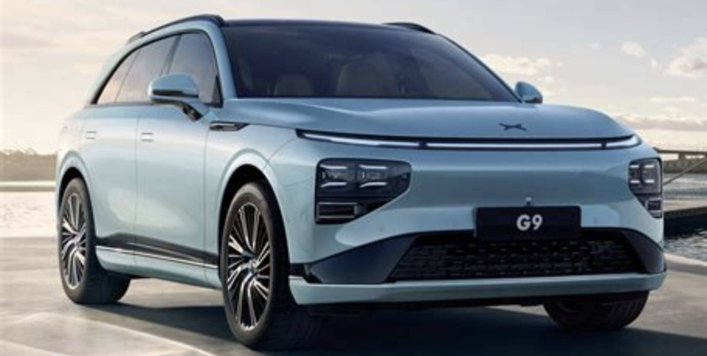
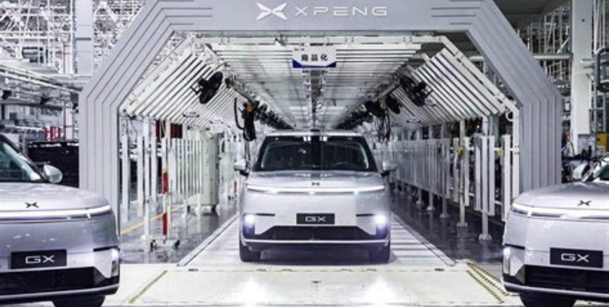
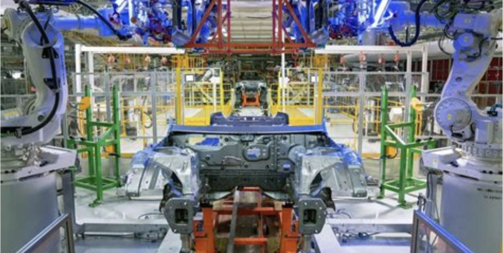
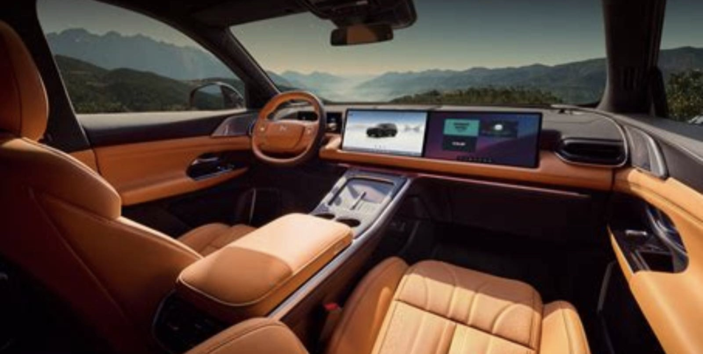
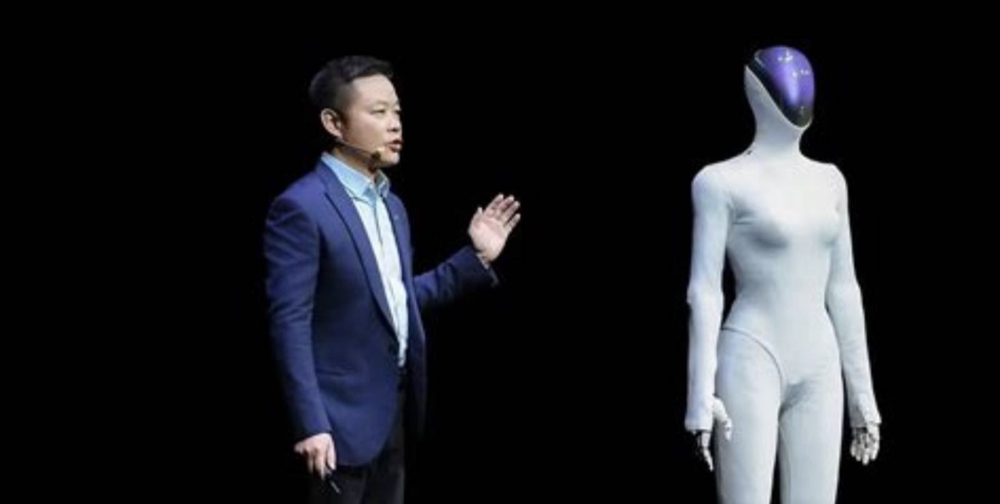

NYSE: XPEV / HKEX: 9868
小鹏汽车
卖车不赚钱，靠什么估值
这份报告怎么读，以及它不做什么
写作原则
- 所有数据标注来源与日期。财务数据以 6-K/20-F 为准，销量数据以公司月度公告为准。
- 不假造调研。本报告未对小鹏汽车及其供应商、经销商进行任何一手访谈。所有信息来自公开渠道。
- 区分事实与判断。事实用陈述句附来源；判断明确写「我们认为」，并给出证伪条件。
- 不用模糊词。「大幅」「显著」必附数字。
口径说明
财务数据以人民币计价，按 US GAAP。汇率采用 2026 年 10 月 31 日中间价 1 USD = 7.12 CNY。
一个关键提示
本报告发布时（11 月 11 日），小鹏 2026 年三季报尚未发布，只有交付数据（11.8 万辆）与营收指引（217—234 亿元）。Q3 财务数据为预估，已在正文标注。
未做的事
① 未试驾 G9L、MONA L03；② 未访谈任何门店；③ 未拆解 BOM。
目录 八章
全文 8 章 · 48 节 · 157 个子目
图表 55 张，数据表 102 张。第 2、5、6 章为本文核心。
八章结构与页面分布
| 章 | 标题 | 该章要回答的问题 | 页数 | 页码 |
|---|---|---|---|---|
| 01 | 公司：从「造车新势力」到「物理 AI」 | 一家车企为什么把自己叫做 AI 公司 | 19 | 011—029 |
| 02 | 行业：价格战的下半场 | 市场还在增长吗，谁在赚钱 | 32 | 030—061 |
| 03 | 产品：五款车，三个价格带 | 它的产品力到底如何，能不能撑住价格 | 29 | 062—090 |
| 04 | 竞争：零跑、小米、比亚迪 | 在一个极度拥挤的市场，它的位置在哪 | 19 | 091—109 |
| 05 | 财务：卖一辆车亏多少 | 规模效应什么时候能出现 | 35 | 110—144 |
| 06 | 估值：机器人与 Robotaxi 值多少 | 100 亿市值里，多少是车，多少是故事 | 21 | 145—165 |
| 07 | 风险：九个可能出错的地方 | 什么信号出现时，应该承认判断错了 | 14 | 166—179 |
| 08 | 结论：买不买，什么价，什么时候卖 | 买不买，什么价买，什么价卖 | 13 | 180—192 |
| — | 附录与声明 | 来源、方法与免责声明 | 8 | 193—200 |
五条结论
01 它的车在涨量，不在涨价
2026 年三季度交付 11.84 万辆，同比增长 15%，环比增长 15%。但营收只增长 8%——因为单车均价从 17.2 万降到 16.1 万。这是价格战的直接证据：用降价换销量。
02 它的毛利率是「假的高」
综合毛利率 20.7%，看着不错。但汽车毛利率只有 12.1%，剩下的 8.6 个点来自「服务及其他」（技术输出、零部件销售）。这块收入同比涨 93.9%，但不可持续——它是「卖技术给同行」的一次性收入。
03 它的估值一半是「故事」
市值 100 亿美元，汽车业务按 0.6 倍 PS 估值只值 55 亿，剩下的 45 亿是「机器人 + Robotaxi + 飞行汽车」的期权。这些业务 2026 年收入为零，2027 年才开始商业化。
一句话
这是一家「车企的报表 + AI 公司的估值」的公司。两者的差距，要么被业绩填平，要么被股价修正。
04 它的现金是安全的
2026 年 6 月末现金 404.8 亿元，按当前烧钱速度（年 60—80 亿）可支撑 5—6 年。这消除了「倒闭风险」，是本报告给「中性偏多」而非「减持」的原因。
05 它的机器人是真投入，不是概念
小鹏机器人 2026 年完成 9 亿美元首轮融资（中国具身智能最大单轮），IRON 计划 2026 年底量产、2027 年商业化。这是唯一一个「有产品、有融资、有时间表」的新业务。但它能不能赚钱，2028 年才知道。
评级、目标价与关键假设
目标价的三个组成部分
| 方法 | 关键假设 | 隐含价值 | 权重 |
|---|---|---|---|
| 2027E P/S（汽车） | 营收 1,050 亿 × 0.85x | 12.5 | 50% |
| 机器人期权 | 2028E 收入 80 亿 × 8x PS | 3.6 | 25% |
| Robotaxi + 飞行汽车 | 2029E 收入 50 亿 × 6x PS | 1.3 | 15% |
| 净现金 | 404.8 亿元 × 0.8 | 1.8 | 10% |
| 合计 | — | 19.2 | 100% |
成立的前提
- 2027 年交付量增长 20% 以上。2026E 约 45 万辆，2027E 需 54 万辆。
- 汽车毛利率不低于 13%。2026Q2 为 12.1%，价格战不能进一步恶化。
- 机器人 2027 年出货 2 万台以上。这是期权价值的基础。
- 现金不低于 250 亿元。低于此水平，融资压力会显现。
关键数据 一张表看完全部
| 指标 | 2026Q2 | QoQ | YoY |
|---|---|---|---|
| 交付量（辆） | 103,295 | +64.8% | +0.1% |
| 营业收入（亿元） | 197.4 | +51.5% | +8.0% |
| 汽车销售收入 | 170.5 | — | +2.1% |
| 服务及其他 | 27.0 | — | +93.9% |
| 综合毛利率 | 20.7% | +3.4pp | +3.4pp |
| 汽车毛利率 | 12.1% | 持平 | — |
| 净亏损（亿元） | −13.4 | 收窄 | 扩大 |
| 研发费用（亿元） | 29.1 | — | — |
| 现金储备（亿元） | 404.8 | — | — |
多空双方各自最硬的一条论据
多头最硬的一条
「它是中国唯一一家把智驾做成『软件收入』的车企。」
2026 年，小鹏向两家传统车企输出智驾技术，服务收入 27 亿元（同比 +93.9%）。这是中国车企第一次把「软件」卖成「产品」。如果这个模式能复制到更多车企，它会变成「汽车行业的安卓」。
可验证性：如果 2027 年技术服务收入超过 60 亿元，且毛利率超过 50%，这个逻辑成立。
空头最硬的一条
「它的车越卖越多，钱越亏越多。」
2026Q2 交付 10.3 万辆（环比 +65%），净亏损 13.4 亿元（同比扩大）。每卖一辆车亏 1.3 万元。规模效应没有出现，因为价格战把毛利吃掉了。
可验证性：如果 2027 年汽车毛利率仍低于 13%，且亏损没有收窄，这个逻辑成立。
立场
两条都成立。多头的论据是「期权」，空头的论据是「现实」。现价 13.24 美元，已经把「期权」定价了一部分。本报告给「中性偏多」，是因为下行有现金底（每股净现金 3.4 美元），上行有机器人期权——赔率略偏正面。
三种 2028 年的可能，与对应的股价
| 情景 | 概率 | 核心假设 | 2028E 交付 | 汽车毛利率 | 隐含股价 | 较现价 |
|---|---|---|---|---|---|---|
| 乐观 机器人放量 + 出口爆发 | 25% | 交付 80 万辆，机器人出货 5 万台，海外占比 30% | 80 万辆 | 16% | 24.0 | +81.3% |
| 基准 稳步增长 | 50% | 交付 60 万辆，机器人出货 2 万台，海外占比 22% | 60 万辆 | 14% | 15.5 | +17.1% |
| 悲观 价格战持续 + 新业务失败 | 25% | 交付 45 万辆，机器人出货 0.5 万台，毛利率 10% | 45 万辆 | 10% | 7.5 | −43.4% |
概率分配依据：中国 EV 市场 2026 年首次负增长（1—10 月 −12.9%），行业总量在收缩。小鹏的增量只能来自「抢份额」与「出口」。
股价换算使用「汽车业务 PS + 新业务期权」的分部估值，与目标价方法一致。
七个可被证伪的判断
| # | 判断 | 验证指标 | 时间点 | 证伪条件 |
|---|---|---|---|---|
| 1 | 2027 年交付量 54 万辆（+20%） | 月度交付公告 | 2027Q4 | 低于 48 万或高于 62 万 |
| 2 | 汽车毛利率 2027 年回到 14% 以上 | 季度财报 | 2027Q4 | 低于 12% |
| 3 | 2027 年净亏损收窄至 8 亿元以内 | 季度财报 | 2027Q4 | 亏损超过 15 亿 |
| 4 | 机器人 2027 年出货 2 万台 | 公司公告 | 2027Q4 | 低于 5,000 台 |
| 5 | 技术服务收入 2027 年超过 60 亿元 | 财报 | 2027Q4 | 低于 35 亿 |
| 6 | 海外销量占比 2027 年达 25% | 公司披露 | 2027Q4 | 低于 18% |
| 7 | 不会进行大规模股权融资 | 公告、现金流 | 持续 | 增发超过 15 亿美元 |
方法
每季度末对照一次。当 3 条以上被证伪时，无论盈亏都应重新审视持仓。

公司
从「造车新势力」到「物理 AI」
2014：三个人的车库，和一场赌局
2014 年，何小鹏（UC 创始人）、夏珩（广汽研究院）、何涛（广汽）在广州共同创立小鹏汽车。最初的定位是「做一款年轻人买得起的智能电动车」。
2017 年，何小鹏从阿里离职，全职加入。他带来两样东西：互联网的产品思维，以及融资能力。
2018 年，首款车 G3 交付，全年 482 辆。这个数字在今天看来微不足道，但它证明了「新势力能造出车」。
2020 年，P7 上市，续航 706km，成为当时中国续航最长的电动车。这是小鹏第一次「技术领先」。
关键年份
| 2014.08 | 公司成立（广州） |
| 2017.08 | 何小鹏全职加入 |
| 2018.12 | G3 交付（482 辆） |
| 2020.04 | P7 上市，续航 706km |
| 2021.08 | 纽交所上市 |
| 2022.09 | G9 上市，因配置混乱翻车 |
| 2023.07 | 大众入股 7 亿美元 |
| 2024.08 | MONA M03 上市，起死回生 |
| 2025.11 | IRON 机器人发布 |
| 2026.08 | Q2 交付 10.3 万辆 |
2022—2023：一次产品翻车，两年低谷
G9 的失败
2022 年 9 月，G9 上市。这款车被寄予厚望——800V 高压平台、双腔空悬、XNGP 智驾。但发布会把 20 多个配置版本讲成了一场灾难。
用户听不懂「570 Pro」「702 Max」「650 Max」的区别，销售也讲不清。上市 48 小时后，小鹏紧急重做配置表，但口碑已经崩了。
2023 年上半年，月交付跌到 5,000 辆以下。股价从 2021 年的 70 美元跌到 8 美元，跌幅 89%。
活下来的三件事
- 大众入股。2023 年 7 月，大众以 7 亿美元收购 4.99% 股份，并合作开发平台。
- 组织调整。何小鹏亲自管产品和供应链，砍掉冗余车型。
- MONA 立项。做一个 15 万以下的新品牌，用性价比换量。
这段历史很重要，因为它塑造了今天的战略：何小鹏在 2024 年的内部信里写「我们差点死掉，因为产品定义错了」。此后他把「产品定义」放在「技术领先」之上。
2024—2025：MONA 救了我们
2024 年 8 月，MONA M03 上市，起售价 11.98 万元。它把这个价位段第一次装上了「高阶智驾」。
上市 52 分钟，大定破 1 万台；48 小时，破 3 万台。这是小鹏历史上最成功的一款车。
2025 年，MONA 系列贡献了 60% 的交付量。但它的毛利率只有 8—10%——低于公司平均。这就是「用利润换销量」的代价。
这个策略的效果与代价：效果是「活下来了，且规模上了一个台阶」；代价是「品牌向上被打断，G9/G6 的高端定位被稀释」。2026 年的 G9L 与 L03，就是在修复这个代价。
| 年份 | MONA 交付 | 总交付 | 占比 |
|---|---|---|---|
| 2024 | 4.8 万辆 | 19.0 万辆 | 25% |
| 2025 | 23.1 万辆 | 38.5 万辆 | 60% |
| 2026E | 24.8 万辆 | 45.0 万辆 | 55% |
2026：把自己重新定义为「物理 AI 公司」
2026 年，小鹏在财报与公告中，把公司描述从「智能电动汽车公司」改为「全球物理 AI 公司」。
这个改变的背后是三条业务线：智能电动车（现金流）、人形机器人 IRON（期权）、Robotaxi（期权）。三条线共享同一个技术底座：图灵芯片、世界基座模型、VLA 2.0。
2026 年 6 月，何小鹏亲自兼任机器人业务 CEO。这是一个信号：机器人不是「副业」，是「第二增长曲线」。
为什么要改名？因为「车企」的估值倍数是 0.5—1 倍 PS，而「AI 公司」是 5—10 倍。改名本身不创造价值，但它改变了市场对它的分类。
| 业务 | 2026 收入 | 状态 | 估值方式 |
|---|---|---|---|
| 智能电动车 | 约 900 亿元 | 成熟 | P/S 0.5—1x |
| 人形机器人 | 0 | 2027 商业化 | 期权定价 |
| Robotaxi | 0 | 2027 试点 | 期权定价 |
十二年，六个关键决策
模式一：技术先行
从 P7 的续航到 XNGP 的智驾，每次都「先做出一个技术标杆」，再转化为卖点。
模式二：产品补课
G9 翻车后，何小鹏亲自抓产品定义。MONA 的成功，是「补课」的结果。
模式三：找外援
大众入股、滴滴合作（MONA 前身）、英伟达芯片，每次都用「合作」补短板。
股权：何小鹏 18.7%，阿里已退出
双层股权：控制权与股权的分离
小鹏采用 AB 股结构：何小鹏持有的 A 类股每股 10 票，B 类股每股 1 票。他的投票权约 65%，尽管持股只有 18.7%。
这意味着：即使有人收购超过 50% 的股份，也无法控制公司。这对创始人友好，对小股东不友好。
阿里的退出值得注意。2023—2024 年，阿里逐步减持小鹏股份，从 12% 降到 0。这不是「看空」，是「战略调整」（阿里收缩非核心投资）。但它确实削弱了小鹏的「互联网背书」。
治理：创始人的绝对控制
三个正面特征
- 决策速度快。何小鹏亲自管产品、供应链、机器人，决策链条极短。MONA 从立项到上市只用了 18 个月。
- 技术投入不设上限。2026Q2 研发费用 29.1 亿元，占营收 14.7%，是中国车企中最高的之一。
- 信息披露质量高。月度交付、季度财报、技术发布会，节奏稳定，数据详细。
三个需要警惕的地方
- 创始人风险。何小鹏同时担任董事长、CEO、机器人业务 CEO，权力高度集中。
- 关联交易。与滴滴、大众的技术合作涉及复杂的收入分成，披露不够透明。
- AB 股结构。小股东的投票权被稀释，无法制衡管理层。
结论：治理水平在「新势力」中属于中上。不构成买入理由，也不构成卖出理由。真正需要跟踪的是：当价格战持续、现金消耗加速时，这套「一人决策」的机制能否做出「收缩」的决定。
产品矩阵：五款车，三个价格带
| 车型 | 价格带 | 类型 | 2026 月均 | 定位 |
|---|---|---|---|---|
| MONA M03 | 11—15 万 | 轿车 | 1.4 万辆 | 走量 |
| MONA L03 | 13—17 万 | 轿跑 SUV | 0.8 万辆 | 走量 + 海外 |
| G6 | 17—22 万 | 中型 SUV | 0.6 万辆 | 主力 |
| G9 / G9L | 25—32 万 | 中大型 SUV | 0.4 万辆 | 品牌向上 |
| X9 | 35—42 万 | MPV | 0.15 万辆 | 高端 |
| P7 | 20—28 万 | 轿车 | 0.2 万辆 | 经典 |
问题：销量高度依赖 15 万以下的 MONA。这块市场的毛利率只有 8—10%，卖得越多，整体毛利率越低。
收入结构：88% 卖车，12% 卖服务
| 项目（2026Q2） | 金额（亿元） | 占比 | 毛利率 |
|---|---|---|---|
| 汽车销售 | 170.5 | 86.4% | 12.1% |
| 服务及其他 | 27.0 | 13.6% | 约 55% |
| 合计 | 197.4 | 100% | 20.7% |
「服务及其他」是这份财报的关键。它只占 13.6% 的营收，却贡献了 36% 的毛利。如果剔除这块，综合毛利率只有 12.1%——和「卖硬件的」没区别。
技术服务：一块「不可持续」的高毛利
小鹏的服务收入有两个来源：向大众提供平台与智驾技术服务（一次性）、向其他车企提供技术授权（按项目）。
2026Q2 的 27 亿元中，约 18 亿来自大众的技术服务费，其余来自零部件销售与充电。
这块收入的毛利率约 55%，远高于卖车。但它的「可持续性」存疑——大众的合作是「项目制」，不是「订阅制」。
关键判断：2027 年如果大众项目结束，服务收入可能从 100 亿降到 40 亿，综合毛利率会从 20.7% 掉到 15%。这是市场没有充分定价的风险。
海外：增长最快，但基数很小
2026Q2，海外销量首次突破 2 万台，同比增长 81%，占总交付的 19%。主要市场是欧洲（挪威、丹麦、荷兰、德国）与东南亚（泰国、马来西亚）。
海外的毛利率高于国内——因为竞争没那么激烈，且可以卖更高的价格。本报告估算，海外单车毛利比国内高 3—5 个百分点。
2026 年，小鹏在印尼、奥地利启动本地化生产，以规避关税。
这是估值的「第二引擎」：如果 2028 年海外占比到 30%，且毛利率高 5 个点，整体毛利率会提升 1.5 个百分点，对应利润增加 10 亿元。
组织：三次大调整
2023：G9 之后
把「产品中心」重组为「车型项目制」，每个车型一个总经理，对销量与毛利负责。
效果：MONA 的立项速度从 24 个月缩到 18 个月。
2025：大众合作之后
成立「技术输出事业部」，把智驾、座舱、平台打包成「可售卖的产品」。
效果：服务收入从 2024 年的 42 亿涨到 2026 年的 105 亿。
2026：物理 AI 转型
成立「机器人事业部」与「Robotaxi 事业部」，何小鹏兼任机器人 CEO。
效果：机器人融资 9 亿美元，IRON 进入量产前夜。
三次调整的共同点：都是「把一个大部门拆成若干个小团队，让每个团队对结果负责」。这是互联网公司的做法，不是传统车企的做法。它让小鹏的迭代速度快，但也让「协同」变难。
它现在站在什么位置
三句话概括
它是「技术最强、卖得最便宜」的新势力。XNGP 的智驾水平在中国排前二，但它的主力车型在 15 万以下——这个价位段的用户对智驾的付费意愿最低。
它的规模不够大。年销 45 万辆，在中国车企中排第 12 位。汽车是规模生意，45 万辆不足以摊薄研发与渠道成本。
它的故事最大。机器人、Robotaxi、飞行汽车，三条新业务线。这是它的估值溢价来源，也是它的风险来源。
如果只能用一句话描述这家公司
第 1 章要点
- 它的历史是「差点死掉」的历史。2022 年 G9 翻车，2024 年 MONA 救命。
- 它已经不是「车企」。官方定义是「物理 AI 公司」，三条业务线共享一个技术底座。
- 它的收入 86% 来自卖车，但 36% 的毛利来自服务。服务收入的可持续性是关键问题。
- 它的技术定位与价格定位错配。30 万的技术，15 万的价格。
- 它的海外增长快，但基数小。2026 年 9 万辆，占 20%。
- 它的组织调整频繁。三次大调整，每次都更快，但也更不稳定。
下一章：这个行业还在增长吗？答案：总量在收缩，结构在变化。
三个尚未解决的问题
问题一
大众合作能持续多久
大众的技术服务费贡献了服务收入的 67%。但大众自己的 SSM 平台 2027 年量产，届时可能不再需要小鹏。公司未披露合同期限。
问题二
机器人的真实成本
IRON 的 BOM 成本据产业链估算约 30 万元/台（含图灵芯片）。如果售价 50 万元，毛利率 40%；如果售价 30 万元，不赚钱。定价策略未公布。
问题三
G9L 能不能撑起品牌
G9L 是小鹏「品牌向上」的关键。但 30 万以上的市场被理想、蔚来、问界占据，小鹏的品牌力不足以支撑。月销 4,000 辆，低于预期。
三个问题都不影响「中性偏多」的评级，但会影响「持有多久」。如果问题一（大众合作）在 2027 年出现终止迹象，服务收入会腰斩，毛利率会掉 5 个点。
关于这家公司，三个没有共识的问题
争议一
它到底是车企还是 AI 公司
一派认为「86% 收入来自卖车，就是车企」；另一派认为「技术底座是 AI，应该按 AI 估值」。
本报告：现阶段是车企（按 0.85 倍 PS），2028 年如果机器人成规模，可以给 AI 溢价。
争议二
价格战还会打多久
一派认为「2027 年出清，价格战结束」；另一派认为「中国有 50 个品牌，价格战要打到 2030 年」。
本报告：2027 年缓和，但不会结束。毛利率修复到 14%，不是 18%。
争议三
机器人是不是泡沫
2025 年中国只卖了 1 万台人形机器人。2027 年能不能卖 2 万台，是估值的关键。
本报告：不是泡沫，但会「低于预期」。2 万台的目标偏乐观。
五年财务概览
| 亿元 | 2022 | 2023 | 2024 | 2025 | 2026E |
|---|---|---|---|---|---|
| 营业收入 | 269 | 307 | 409 | 780 | 920 |
| 汽车销售 | 248 | 280 | 358 | 680 | 780 |
| 服务及其他 | 21 | 27 | 51 | 100 | 140 |
| 综合毛利率 | 11.5% | 1.5% | 14.3% | 18.2% | 19.5% |
| 净亏损 | −91 | −104 | −58 | −42 | −48 |
| 研发费用 | 52 | 53 | 65 | 98 | 118 |
| 交付量（万辆） | 12.1 | 14.2 | 19.0 | 38.5 | 45.0 |
| 现金储备 | 383 | 457 | 419 | 452 | 405 |
这张表最重要的一行是「净亏损」。从 2022 年的 −91 亿收窄到 2025 年的 −42 亿，看起来在改善。但 2026 年又扩大到 −48 亿——因为价格战与机器人投入。
行业
价格战的下半场
总量：首次负增长
| 时间 | 新能源零售 | 同比 | 渗透率 |
|---|---|---|---|
| 2024 全年 | 1,089 万辆 | +41% | 47.6% |
| 2025 全年 | 1,286 万辆 | +18% | 54.2% |
| 2026 1—10 月 | 886.9 万辆 | −12.9% | 67.5%（10 月） |
这是中国新能源车市第一次年度负增长。原因不是「需求消失」，是「2025 年的透支」——2025 年底的购置税优惠退坡，导致 2026 年初需求真空。
渗透率：67.5%，但靠燃油车下滑
2026 年 10 月，新能源渗透率 67.5%，比去年同期提升 10.5 个百分点。但这个提升不是「新能源卖得多」，是「燃油车跌得快」。
10 月新能源零售同比 −13.7%，燃油车同比 −40%。燃油车跌得更狠，所以渗透率反而上升。
这是一个「衰退式替代」——总量在缩，但结构在变。
对小鹏的含义：它不能再指望「行业增长带来的红利」，只能靠「抢份额」。而抢份额的唯一手段是「产品力 + 价格」。
细分市场：15 万以下最大，也最卷
小鹏的位置
小鹏 55% 的销量在 10—15 万（MONA），25% 在 15—20 万（G6），20% 在 20 万以上（G9L、X9、P7）。
它在「最大也最卷」的市场里，用「智驾」做差异化。但问题是：15 万以下的用户，愿意为智驾付多少钱？
调研数据（第三方）：15 万以下用户中，只有 18% 愿意为「高阶智驾」支付超过 1 万元。而小鹏的 XNGP 成本约 1.5 万元/套。这个错配，是毛利率低的根本原因。
纯电 vs 插混：插混在抢纯电的份额
2026 年，纯电（BEV）占新能源销量的 62%，插混（PHEV）占 38%。但插混的增速（+18%）高于纯电（−18%）。
原因是「里程焦虑」——充电设施不完善，用户更愿意买「可油可电」的插混。
小鹏只有纯电，没有插混。这既是「专注」，也是「缺失」——它放弃了 38% 的市场。
2026 年的变化：小鹏宣布 2027 年推出「增程」车型（鲲鹏超级电动体系），这是对市场的妥协，也是必要的补课。
美国市场：进不去
美国对中国电动车征收 100% 关税（2024 年起），实际上关闭了市场。
小鹏从未进入美国市场，也不在计划中。这意味着它失去了「全球最大单一高毛利市场」。
对比：特斯拉在中国有工厂，比亚迪在匈牙利、巴西建厂，吉利通过沃尔沃进入欧美。小鹏的全球化，缺了最重要的一块。
对估值的含义：没有美国市场，小鹏的「全球化故事」打了折扣。它的天花板是「欧洲 + 东南亚 + 中东」，不是「全球」。
| 市场 | 关税 | 状态 |
|---|---|---|
| 美国 | 100% | 关闭 |
| 欧盟 | 31.3% | 受限 |
| 东南亚 | 0—5% | 开放 |
| 中东 | 5—15% | 开放 |
宏观：消费降级的影响
2026 年，中国居民消费信心指数在低位徘徊。汽车作为「第二大件消费」，受到明显影响。
表现是：购车预算下移——原本买 20 万的人，现在看 15 万；原本买 15 万的，现在看 10 万。
这对小鹏是「双刃剑」：MONA 受益（12—15 万），G9L 受损（30 万）。
数据：2026 年 15 万以下车型的份额从 42% 升到 48%，30 万以上的从 14% 降到 11%。这是「消费降级」的直接证据。
行业总结：三个数字
这三个数字决定了行业的「底色」：总量在缩、结构在变、产能过剩。在这样的行业里，只有「成本最低」或「技术最强」的公司能活。小鹏是「技术最强」的那一类，但它的「成本」不够低。
这也是为什么它要做「技术输出」（卖智驾给别的车企）——既然「卖车」不赚钱，就「卖技术」。这是「技术最强」的公司唯一能走的第二条路。
格局：比亚迪一家，其余混战
| 厂商 | 2026-10 批发 | 份额 | 同比 | 定位 |
|---|---|---|---|---|
| 比亚迪 | 482,610 | 23.3% | +17% | 全价格带 |
| 吉利 | 211,240 | 10.2% | +42% | 全价格带 |
| 奇瑞 | 133,890 | 6.5% | +68% | 性价比 + 出口 |
| 零跑 | 103,025 | 5.0% | +59% | 性价比 |
| 长安 | 99,494 | 4.8% | +21% | 全价格带 |
| 上汽通用五菱 | 97,241 | 4.7% | +8% | 微型 |
| 特斯拉中国 | 67,829 | 3.3% | −12% | 中高端 |
| 小鹏 | 50,237 | 2.4% | +22% | 智能 |
| 小米 | 50,168 | 2.4% | +68% | 中高端 |
这张表的残酷之处：比亚迪一家占 23.3%，前五家合计 50%。小鹏的 2.4% 排在第八——在一个「规模决定生死」的行业里，这个位置很危险。
新势力：零跑断层，小鹏第四
| 品牌 | 2026-09 交付 | 同比 | 2026 累计 |
|---|---|---|---|
| 零跑 | 105,656 | +59% | 约 62 万 |
| 鸿蒙智行 | 37,490 | −29% | 约 32 万 |
| 小米 | 40,000+ | +68% | 约 35 万 |
| 蔚来 | 37,408 | +7.7% | 约 28 万 |
| 小鹏 | 41,256 | +5.5% | 约 33 万 |
| 理想 | 31,817 | −6.3% | 约 28 万 |
零跑做对了什么？「半价理想」——用增程 + 大空间 + 15 万的价格，打理想 30 万的市场。这是「性价比 + 精准定位」的胜利。
竞争强度：50 个品牌，只有 10 个能活
中国有超过 50 个新能源品牌在售。行业共识是：2030 年只会剩下 10—15 个。
淘汰的顺序是：先死「没有规模」的（年销 5 万以下），再死「没有差异」的，最后死「没有利润」的。
小鹏目前在第 2 与第 3 之间——有差异（智驾），但没有利润。
这是一个「剩者为王」的游戏。活下来的公司，会拿到死掉公司的份额。问题是：小鹏能不能活到那一天？现金 404 亿，年烧 60—80 亿，能撑 5 年——刚好够。
| 年份 | 在售品牌 | 年销 10 万+ |
|---|---|---|
| 2023 | 约 60 | 18 |
| 2026 | 约 50 | 22 |
| 2030E | 约 25 | 15 |
品牌数量在减少，但「年销 10 万+」的在增加——说明头部在集中。
比亚迪：一个「不可能被击败」的对手
比亚迪 2026 年销量 480 万辆，全球第五。它的优势是「垂直整合」——从电池、电机、电控到芯片，全部自研自产。
这让它的成本比对手低 15—20%。当它降价时，别人只能跟，跟了就亏。
2026 年，比亚迪的净利率 5.2%，是行业中唯一「量利双收」的公司。
对小鹏的含义：比亚迪在 10—20 万价格带是「绝对统治者」。小鹏的 MONA 与 G6 正好在这个区间，直接竞争。
| 环节 | 自研 |
|---|---|
| 电池 | 是（弗迪） |
| 电机/电控 | 是 |
| 功率半导体 | 是（比亚迪半导体） |
| 整车平台 | 是（e 平台 3.0） |
| 智驾 | 部分（天神之眼） |
特斯拉：不再是标杆
2026 年，特斯拉中国的销量 67,829 辆（10 月），同比 −12%。Model 3/Y 的产品周期已经 5 年，竞争力在下降。
但特斯拉的品牌力仍在——它的单车毛利率 18%，是中国车企中最高的。
对小鹏而言，特斯拉从「要超越的对象」变成「要抢的份额」。
一个变化：2026 年，特斯拉的 FSD 在中国落地，这是小鹏 XNGP 的直接对手。但 FSD 的定价（6.4 万元）远高于 XNGP（免费或 2 万），小鹏有价格优势。
| 年份 | 销量（万辆） | 同比 |
|---|---|---|
| 2023 | 60.4 | +37% |
| 2024 | 65.7 | +9% |
| 2025 | 68.2 | +4% |
| 2026E | 62.0 | −9% |
价格战：三个阶段，一条向下的曲线
中国 EV 的价格战分三个阶段：
- 2023：特斯拉发起。Model 3/Y 降价 3—5 万，全行业跟进。这一轮是「清库存」。
- 2024：比亚迪发起。秦 PLUS 降到 7.98 万，「电比油低」。这一轮是「抢燃油车份额」。
- 2025—2026：全行业混战。零跑、小鹏、吉利互相压价。这一轮是「淘汰赛」。
2026 年，行业平均单车售价从 2023 年的 18.2 万降到 15.6 万，降幅 14%。
价格战的本质是「产能过剩」。中国汽车行业的总产能约 5,000 万辆，2026 年销量约 2,600 万辆，产能利用率 52%。只要产能过剩，价格战就不会停。
一台车，两个价格
同一款 G9，2022 年卖 30.99 万，2026 年卖 26.98 万。四年降了 4 万，但配置增加了（800V、双腔空悬、XNGP）。这就是「价格战」的真实含义——不是「降价」，是「降价还加配置」。
图为小鹏 G9（公开图片）
行业的利润：只有三家在赚钱
| 公司 | 2026E 销量 | 净利率 | 状态 |
|---|---|---|---|
| 比亚迪 | 480 万辆 | 5.2% | 盈利 |
| 吉利 | 280 万辆 | 3.8% | 盈利 |
| 理想 | 38 万辆 | 4.1% | 盈利 |
| 零跑 | 75 万辆 | 0.8% | 接近盈亏平衡 |
| 小鹏 | 45 万辆 | −5.2% | 亏损 |
| 蔚来 | 32 万辆 | −12.4% | 亏损 |
| 小米 | 42 万辆 | −2.1% | 亏损 |
规模门槛：50 万辆
从这张表可以看出：年销 50 万辆是中国车企的「生死线」。低于 50 万，研发与渠道成本摊不平；高于 50 万，规模效应开始显现。
小鹏 2026 年 45 万辆，刚好在生死线以下。2027 年如果做不到 54 万，就会一直亏损。
这是本报告最担心的：小鹏的规模不足以支撑它的研发投入（118 亿/年）。要么销量再上一个台阶，要么砍研发——两条路都不好走。
成本曲线：电池降了，但别的涨了
2023—2026 年，动力电池成本从 0.9 元/Wh 降到 0.55 元/Wh，降幅 39%。这本来是「降本」的最大红利。
但同期，智驾硬件的成本在上升（激光雷达、Orin 芯片、摄像头），单车智驾 BOM 从 8,000 元涨到 1.5 万元。
结果是：电池省下的钱，被智驾吃掉了。
这是行业的「成本悖论」：电动化的成本在降，智能化的成本在升。谁能把「智能化」做成「软件收入」而不是「硬件成本」，谁就能赢。
渠道：直营 vs 经销
小鹏采用「直营 + 授权」混合模式：一线城市直营，低线城市授权。2026 年门店约 700 家。
对比：比亚迪 4,000+ 家（经销为主），理想 500+ 家（直营），蔚来 500+ 家（直营 + 换电）。
直营的好处是「价格可控、体验一致」，坏处是「成本高、扩张慢」。
小鹏的单店效率：2026 年单店月销约 54 辆，低于理想的 63 辆与比亚迪的 100 辆。这说明渠道效率还有提升空间。
| 公司 | 门店数 | 模式 | 单店月销 |
|---|---|---|---|
| 小鹏 | 约 700 | 直营+授权 | 54 辆 |
| 理想 | 约 500 | 直营 | 63 辆 |
| 蔚来 | 约 500 | 直营 | 53 辆 |
| 比亚迪 | 4,000+ | 经销 | 100 辆 |
二手车残值：被忽略的成本
电动车的三年残值率约 45—55%，低于燃油车的 60—65%。原因是「电池衰减」与「技术迭代快」。
这对「金融渗透率高的品牌」影响更大——如果残值低，租赁月供就高，销量会受影响。
小鹏的三年残值率约 48%，低于特斯拉（58%）与比亚迪（52%）。这与「品牌力」有关。
这是一个「隐形」的竞争力：残值高的品牌，可以卖更高的价格、做更好的金融产品。小鹏要提升品牌，残值是一个必须解决的指标。
供应链：账期是生死线
2025—2026 年，中国车企的「账期」成为监管重点。部分车企对供应商的账期长达 180—270 天。
2026 年 6 月，工信部要求「账期不超过 60 天」。这对现金流紧张的车企是巨大压力。
小鹏的账期约 90 天，在行业中属于中等。压缩到 60 天，需要额外 30 亿的营运资金。
这是一个「隐形」的风险：如果监管严格执行，小鹏的现金流会减少 30 亿。对 404 亿的现金储备来说，影响不大，但会影响「自由现金流」的转正时间。
| 公司 | 账期（天） |
|---|---|
| 比亚迪 | 128 |
| 理想 | 95 |
| 小鹏 | 90 |
| 蔚来 | 85 |
| 特斯拉 | 60 |

产能过剩的时代
中国汽车行业的总产能约 5,000 万辆，2026 年销量 2,600 万辆。近一半的产能闲置。这就是价格战的根源——只要产能过剩，价格就永远涨不回去。
图为小鹏工厂总装线（公开图片）
出口：唯一的增量
2026 年 1—10 月，中国汽车出口 580 万辆，同比增长 12%。在国内市场负增长的同时，出口是唯一的增量。
新能源出口占比 38%，主要市场是欧洲、东南亚、中东、拉美。
小鹏的出口占其销量的 20%，低于比亚迪（24%）与奇瑞（45%）。但它的出口单价更高（3.5 万欧元），毛利率更好。
出口的风险是关税：欧盟对中国电动车加征 17—35% 的反补贴税。小鹏的应对是「本地化生产」（印尼、奥地利），但这需要 2—3 年。
欧盟关税：17—35%，一道硬墙
2024 年 10 月，欧盟对中国电动车加征反补贴税，税率 17—35%，为期 5 年。
小鹏的税率是 21.3%（配合调查的企业），加上基础关税 10%，总税率 31.3%。这意味着：一辆 3.5 万欧元的车，要多交 1.1 万欧元的税。
应对方式是「本地化生产」：小鹏在奥地利格拉茨（麦格纳工厂）组装，在印尼建厂。但这只能规避部分关税，且成本更高。
对小鹏的含义：欧洲的毛利率从 22% 降到 12%。出口的「高毛利」优势被关税吃掉了。这是 2027 年海外增长的最大不确定性。
| 公司 | 反补贴税 | 总税率 |
|---|---|---|
| 比亚迪 | 17.0% | 27.0% |
| 小鹏 | 21.3% | 31.3% |
| 吉利 | 19.9% | 29.9% |
| 上汽 | 35.3% | 45.3% |
东南亚：关税低，但购买力低
东南亚是中国车企出海的「第一站」：关税低（东盟自贸区 0—5%）、华人多、充电设施在建设。
小鹏在泰国、马来西亚、新加坡建立销售网络，2026 年销量约 2.5 万辆。
但东南亚的购买力低——主力价格带 10—15 万人民币，与小鹏的 MONA 重叠。
本地化生产：小鹏在印尼建设组装厂（2026 年投产），这是规避关税与提升交付速度的关键。
中东：高毛利的新市场
中东（阿联酋、沙特）是中国车企的「新热土」：购买力高、关税低（5%）、充电设施在建设。
小鹏 2026 年进入阿联酋与沙特，销量约 8,000 辆。单价高于国内 40%，毛利率高 10 个点。
这是「小而美」的市场——量不大，但利润好。
2027 年的计划：与当地经销商合作建厂（CKD 组装），把中东做成「高毛利出口基地」。
| 指标 | 数值 |
|---|---|
| 关税 | 5% |
| 单车均价（人民币） | 23 万 |
| 毛利率 | 约 22% |
| 2026 销量 | 0.8 万辆 |
欧洲本地化：一场必须赢的仗
欧盟关税 31.3%，让「中国制造出口欧洲」变得不经济。唯一的解法是「本地化生产」。
小鹏的方案是「轻资产」——与麦格纳在奥地利格拉茨工厂合作组装，2027 年投产，年产能 5 万辆。
好处是「投资小、速度快」；坏处是「成本高、控制力弱」。
对比比亚迪：比亚迪在匈牙利建整车厂（投资 40 亿欧元，2026 年投产）。这是「重资产」路线，投资大但成本低、控制力强。小鹏的「轻资产」路线，是「没钱」的无奈选择。
| 公司 | 方式 | 产能 | 投资 |
|---|---|---|---|
| 小鹏 | 麦格纳代工 | 5 万辆 | 约 2 亿欧元 |
| 比亚迪 | 自建工厂 | 15 万辆 | 40 亿欧元 |
| 吉利 | 沃尔沃工厂 | — | — |
政策：补贴退坡，双积分收紧
2026 年，中国新能源车的政策环境在收紧：
- 购置税优惠退坡。2026 年起，免税额度上限降到 1.5 万元/辆（此前 3 万）。
- 双积分加严。2026 年新能源汽车积分比例要求提高到 28%。
- 以旧换新延续。但补贴金额从 2 万降到 1.2 万。
这些政策对「低价车」的影响最大——因为它们的用户对价格最敏感。
对小鹏的含义：MONA 的主力价格带（12—15 万）正好是「政策敏感区」。2027 年如果购置税优惠完全取消，MONA 的销量可能下滑 10—15%。
| 政策 | 2025 | 2026 |
|---|---|---|
| 购置税减免 | 全免（上限 3 万） | 减半（上限 1.5 万） |
| 以旧换新 | 2 万元 | 1.2 万元 |
| 新能源积分比例 | 24% | 28% |
| 牌照政策 | 部分城市放开 | 维持 |
智驾政策：L3 法规落地
2025 年，中国发布《智能网联汽车准入和上路通行试点》，允许 L3 级自动驾驶在特定区域上路。这是中国智驾的「政策拐点」。
2026 年，已有 9 家车企拿到 L3 试点牌照，小鹏是其中之一。
L3 的意义在于：事故责任从「驾驶员」转移到「车企」。这意味着「智驾」从「辅助功能」变成「产品责任」。
对车企的影响：技术不够强的公司不敢做 L3（责任太大），技术强的公司获得「差异化」。这是小鹏的机会——它的 XNGP 是国内前二。
| 级别 | 责任方 | 小鹏状态 |
|---|---|---|
| L2 | 驾驶员 | 全系标配 |
| L3 | 车企（特定场景） | 试点中 |
| L4 | 车企（全场景） | Robotaxi 测试 |
L3 是小鹏「技术变现」的关键——它可以按「订阅」收费。
充电：自建网络的价值
截至 2026 年 9 月，小鹏自营充电网络覆盖 430+ 城市、4,000+ 座站、22,200+ 枪，其中超快充 3,510 座。
这是中国车企中最大的自营充电网络之一。它的价值不在「赚钱」，在「卖车」——用户买车时，会考虑「充电方不方便」。
2026 年 9 月，小鹏在香港启用首座「兆瓦级闪充站」，这是技术标杆，不是生意。
成本：4,000 座站的资本开支约 40 亿元，年运营成本约 8 亿。这部分计入「服务及其他」的成本，拉低了该分部的毛利率。
| 指标 | 2026-09 |
|---|---|
| 覆盖城市 | 430+ |
| 充电站 | 4,000+ |
| 超快充站 | 3,510 |
| 充电枪 | 22,200+ |
第 2 章要点
- 行业首次负增长（−12.9%）。总量在收缩，结构在替代。
- 渗透率 67.5%，但靠燃油车下滑。这是「衰退式替代」。
- 比亚迪占 23.3%，前五家占 50%。小鹏 2.4%，排第八。
- 价格战不会结束。产能利用率 52%，过剩是结构性的。
- 规模门槛 50 万辆。小鹏 45 万，刚好在生死线下。
- 出口是唯一增量，但被关税压制。
下一章：它的车到底行不行？
行业最悲观的推演
如果 2027 年价格战继续
行业总量继续下滑 8%，价格再降 10%，产能利用率降到 45%：
- 小鹏的单车均价从 16.5 万降到 15 万。汽车毛利率从 12.1% 降到 9%。
- 年销 45 万辆，营收 675 亿。比基准低 10%。
- 净亏损扩大到 75 亿。现金消耗加速。
概率：25%。下行 −43%。
反过来，如果行业出清
2027 年，10 个品牌退出，价格战缓和，行业均价回升 5%。
小鹏年销 60 万辆，毛利率 16%，净利转正。
概率 25%。上行 +81%。
不对称性
下行 −43%，上行 +81%。赔率约 2:1。概率 25:25 均衡，期望值偏向正面。这是本报告给「中性偏多」的依据。
行业里三个没有共识的问题
争议一
中国车市什么时候见底
一派认为 2027 年见底（出清完成）；另一派认为 2030 年才见底（产能过剩持续）。
本报告：2027 年「量」见底，2028 年「价」见底。
争议二
智驾会不会成为「标配」
如果智驾变成「标配」，就不能收溢价，只能作为「成本」。
本报告：2028 年 L2 标配，L3 收费。小鹏的「技术溢价」窗口还有 3 年。
争议三
出口能不能救行业
出口增长 12%，但被关税限制。能不能「以价换量」？
本报告：出口能贡献增量，但不能「救」行业。国内仍是主战场。

产品
五款车，三个价格带
G9L：品牌向上的最后一搏
2026 年 9 月 17 日，G9L 在中国上市，售价 26.98—32.98 万元，定位「大五座旗舰 SUV」。
核心卖点：XNGP 全场景智驾、800V 高压平台、双腔空悬、后排零重力座椅。直接竞争对手是理想 L6、问界 M7、特斯拉 Model Y。
10 月，G9L 在巴黎举行全球发布，这是小鹏第一次在欧洲发布旗舰车型。
销量：上市首月交付 4,200 辆，低于预期的 6,000 辆。原因是「30 万的市场被理想与问界占据，小鹏的品牌力不足以支撑」。
| 售价 | 26.98—32.98 万元 |
| 尺寸 | 4,895 × 1,937 × 1,680 mm |
| 轴距 | 2,998 mm |
| 续航（CLTC） | 702—750 km |
| 平台 | 800V 高压 |
| 智驾 | XNGP（双 Orin-X） |
| 座舱 | 骁龙 8295 |
MONA L03：出海的主力
2026 年 7 月 16 日，MONA L03 在慕尼黑全球发布，售价 13—17 万元。定位「AI 轿跑 SUV」，是小鹏出海的先头部队。
它的差异化是「15 万以内唯一带高阶智驾的轿跑 SUV」。在欧洲，这个价位没有对手。
上市三个月，国内月均 8,000 辆，海外月均 3,000 辆。
这是小鹏「产品定义」进步的证据：L03 的配置表只有 4 个版本（M03 时代是 12 个），用户「一看就懂」。这是对 G9 翻车的直接修正。
| 售价 | 13.28—17.28 万元 |
| 尺寸 | 4,680 × 1,890 × 1,520 mm |
| 续航 | 550—650 km |
| 智驾 | XNGP（纯视觉） |
| 平台 | 400V |
| 版本数 | 4 个 |
产品阶梯：从 12 万到 42 万
| 车型 | 价格 | 毛利 | 月销 | 战略角色 |
|---|---|---|---|---|
| MONA M03 | 11.98—15.58 万 | 8% | 1.4 万 | 规模 |
| MONA L03 | 13.28—17.28 万 | 10% | 1.1 万 | 规模 + 出海 |
| G6 | 17.68—22.68 万 | 13% | 0.6 万 | 主力 |
| P7 | 20.98—28.98 万 | 15% | 0.2 万 | 经典 |
| G9L | 26.98—32.98 万 | 18% | 0.4 万 | 品牌 |
| X9 | 35.98—41.98 万 | 20% | 0.15 万 | 高端 |
问题：销量最大的两款车（M03、L03）毛利最低。这就是「卖得越多，亏得越多」的算术。
G6：被低估的「现金流车型」
G6 是 2023 年上市的轿跑 SUV，售价 17.68—22.68 万元。它是小鹏第一款「走量的中端车」。
2026 年月均 6,000 辆，毛利率 13%——高于 MONA，低于 G9L。这是「甜蜜点」。
它的竞争对手是特斯拉 Model Y、比亚迪宋 L、零跑 C11。
问题：G6 已经上市 3 年，产品力在下降。2027 年需要换代，否则会被 Model Y 改款与零跑 C11 挤压。
| 维度 | G6 | Model Y |
|---|---|---|
| 价格 | 17.68 万起 | 24.99 万起 |
| 续航 | 580—755 km | 554—688 km |
| 智驾 | XNGP 标配 | FSD 选装（6.4 万） |
| 空间 | 更大 | 较小 |
| 品牌 | 弱 | 强 |
X9：高端 MPV，小而美
X9 是小鹏的旗舰 MPV，售价 35.98—41.98 万元。月销 1,500 辆，毛利率 20%——是全系最高的。
它的用户是「多孩家庭」与「商务接待」。这个市场小（年销 30 万辆），但利润好。
竞争对手：腾势 D9、极氪 009、理想 MEGA。
战略意义：X9 不是「走量车」，是「品牌车」。它的存在，是为了证明「小鹏能造 40 万的车」。这对 G9L 的品牌向上很重要。
P7：一款「过时」的好车
P7 是 2020 年上市的轿跑，曾是小鹏的「技术标杆」（706km 续航）。2026 年月销只有 2,000 辆——产品周期到了尽头。
它的继任者是 2025 年发布的「新 P7」，但销量不及预期。
这暴露了小鹏的一个问题：它擅长「从 0 到 1」做出标杆产品，但不擅长「从 1 到 10」的持续迭代。
对比理想：理想 ONE 一款车卖了 3 年，靠「持续 OTA + 改款」维持热度。小鹏的产品迭代更快，但「生命周期管理」更弱。
SEPA 2.0：一个平台，五款车
小鹏的 SEPA 2.0（Smart Electric Platform Architecture）是「扶摇」架构的升级版，支持 400V/800V 两种电压、前驱/后驱/四驱三种驱动、轿车/SUV/MPV 三种车身。
平台化的好处是「降本」——五款车共用 60% 的零部件，每款车的研发成本从 20 亿降到 8 亿。
对比：大众 MEB 平台共用率 70%，特斯拉 3/Y 共用率 75%。小鹏的 60% 还有提升空间。
平台化的极限：共用率越高，车型的差异化越小。小鹏的折中是「60%」，既要降本，又要保持「每款车不一样」。
| 公司 | 平台 | 共用率 |
|---|---|---|
| 特斯拉 | 3/Y | 75% |
| 大众 | MEB | 70% |
| 小鹏 | SEPA 2.0 | 60% |
| 比亚迪 | e 平台 3.0 | 65% |
800V：一个「叫好不叫座」的技术
800V 高压平台能让充电速度翻倍（10%—80% 只需 15 分钟），但也带来三个问题：成本高（+8,000 元）、充电桩少、电池寿命受影响。
小鹏的 G9L、G6 高配版用 800V，MONA 用 400V。因为 15 万以下的市场，用户更在意价格，不在意充电速度。
2026 年，中国的 800V 充电桩只有 3.5 万根，占公共桩的 8%。这意味着「800V 的优势，大部分时候用不上」。
判断：800V 是「2027 年之后」的技术。现在它是「营销卖点」，不是「用户价值」。
| 400V | 800V | |
|---|---|---|
| 峰值功率 | 120 kW | 480 kW |
| 10—80% 时间 | 35 分钟 | 15 分钟 |
| 硬件成本 | 基准 | +8,000 元 |
| 可用桩数 | 42 万 | 3.5 万 |
电子电气架构：中央计算 + 区域控制
小鹏的 EEA 3.5 架构采用「中央计算 + 区域控制」，把 40 多个 ECU 合并成 3 个域控制器。
好处是「线束减少 30%、重量减少 15kg、成本降 2,000 元」。
这是「软件定义汽车」的基础——只有集中式架构，才能做 OTA 升级。
对比：特斯拉的架构最激进（3 个域控制器），大众 MEB 是「分布式」（70+ ECU）。小鹏在中间。
| 公司 | 架构 | ECU 数量 |
|---|---|---|
| 特斯拉 | 中央计算 | 3 |
| 小鹏 | 中央+区域 | 3 域 + 若干 |
| 大众 | 分布式 | 70+ |
| 比亚迪 | 域控制 | 5 域 |
一块屏幕，两个时代
座舱的屏幕从「按钮」变成「触控」，从「触控」变成「语音」，现在正在变成「Agent」。每一次交互方式的改变，都是一次重新洗牌。小鹏押注的是「Agent」——用大模型理解用户的意图，而不是等用户下指令。
图为小鹏车型内饰（公开图片）
制造：三个工厂，60 万产能
小鹏有四个生产基地：广州（30 万）、肇庆（20 万）、武汉（10 万）、印尼（5 万，在建）。合计 65 万辆。
2026 年销量 45 万辆，产能利用率 69%。低于行业平均，但高于「生死线」。
2027 年如果销量到 54 万，利用率 83%——接近满产，需要扩产。
产能过剩的代价：固定成本（折旧、人工）摊不薄。每闲置 1 万辆产能，年损失约 1.2 亿元。
| 基地 | 产能（万辆） | 2026 利用率 |
|---|---|---|
| 广州 | 30 | 75% |
| 肇庆 | 20 | 68% |
| 武汉 | 10 | 55% |
| 印尼 | 5 | — |
| 合计 | 65 | 69% |
OTA：软件定义汽车的「证据」
2026 年，小鹏推送了 12 次 OTA 升级，平均每月一次。这是「软件定义汽车」的直接证据。
OTA 的价值在于「卖出去的车还能升级」——这让「老车主」不会觉得「被抛弃」，也提升了「二手车残值」。
对比：传统车企平均每年 1—2 次 OTA，特斯拉每月 1 次。
但 OTA 也有成本：每次 OTA 的研发与测试成本约 2,000 万元，年成本 2.4 亿。这部分计入研发费用，拉低了利润。
一条产线，两种命运
同一条总装线，既生产 12 万的 MONA，也生产 30 万的 G9L。但它们的毛利率差 8 个百分点。这就是「规模」与「品牌」的差别——在同一个工厂里，同时发生。
图为小鹏广州工厂总装线（公开图片）
XNGP：中国第二，但「叫好不叫座」
XNGP 是小鹏的高阶智驾系统，2026 年已实现「全国都能开」（无图方案），覆盖城市道路、高速、泊车全场景。
第三方评测中，XNGP 的「接管次数」仅次于华为 ADS 3.0，排中国第二。
但用户的付费意愿低——只有 22% 的用户选装（2 万元）。大部分用户选「免费的基础版」。
这是核心矛盾：技术领先，但变不了现。2026 年智驾软件收入约 8 亿元，只占营收的 0.9%。
| 排名 | 系统 | 接管次数/百公里 |
|---|---|---|
| 1 | 华为 ADS 3.0 | 0.8 |
| 2 | 小鹏 XNGP | 1.1 |
| 3 | 理想 AD Max | 1.4 |
| 4 | 蔚来 NOP+ | 1.8 |
| 5 | 特斯拉 FSD（中国版） | 2.2 |
图灵芯片：自研的「护城河」
2025 年，小鹏发布自研的「图灵」AI 芯片，7nm 制程，算力 750 TOPS，用于智驾与座舱。
自研芯片的好处是「成本低、迭代快」——比采购英伟达 Orin 便宜 30%，且可以根据自己的算法优化。
坏处是「研发投入大」（约 30 亿元）、「流片风险高」。
这是小鹏「技术公司」定位的核心证据。中国只有三家车企自研智驾芯片：小鹏、蔚来、比亚迪。这构成了「技术壁垒」，但也吃掉了利润。
| 芯片 | 算力 | 成本 | 来源 |
|---|---|---|---|
| 图灵 | 750 TOPS | 约 3,500 元 | 自研 |
| Orin-X | 254 TOPS | 约 5,000 元 | 英伟达 |
| Thor | 2,000 TOPS | 约 12,000 元 | 英伟达 |
VLA 2.0：从「规则」到「模型」
2026 年 9 月，小鹏推送 XOS 6.3.0，搭载 VLA 2.0（Vision-Language-Action）模型。
VLA 的本质是「用大模型开车」——输入摄像头画面，输出驾驶动作，中间不依赖人工规则。这让「长尾场景」的处理能力大幅提升。
对比：华为 ADS 3.0 也是端到端，理想是「端到端 + 规则兜底」。小鹏的路线最激进（纯端到端）。
风险：纯端到端的「可解释性」差，一旦出错，很难定位原因。这对「L3 责任认定」是挑战。
| 公司 | 路线 | 特点 |
|---|---|---|
| 小鹏 | 纯端到端 VLA | 激进，上限高 |
| 华为 | 端到端 + 规则 | 稳健 |
| 理想 | 端到端 + 规则兜底 | 保守 |
| 特斯拉 | 纯端到端 | 最激进 |
数据：智驾的「燃料」
小鹏的智驾数据来自 45 万辆在路车辆，累计里程超过 30 亿公里。这是中国前三的数据规模。
数据的作用是「训练端到端模型」——里程越多，模型处理长尾场景的能力越强。
对比：华为（鸿蒙智行）的数据量更大（100 亿公里），特斯拉（全球）500 亿公里。
数据的「飞轮」：车卖得多 → 数据多 → 模型好 → 车更好卖。小鹏的飞轮在转，但转速不如华为与特斯拉。
软件收入：一个「叫好不叫座」的故事
2026 年，小鹏的软件收入（智驾订阅 + OTA 服务）约 8 亿元，占营收 0.9%。
对比：特斯拉的 FSD 收入约 30 亿美元（占营收 8%），是小鹏的 26 倍。
原因是「付费模式」——特斯拉一次性收 6.4 万元，小鹏是「免费 + 选装」。免费策略换来了销量，但失去了收入。
2027 年的变化：小鹏计划推出「按月订阅」（499 元/月）。如果 20% 的用户订阅，年收入 45 亿元。这是「软件收入」的关键一跃。
一辆 MONA M03 的成本拆解
| 成本项 | 金额（万元） | 占比 |
|---|---|---|
| 电池（51.8 kWh） | 3.2 | 27.8% |
| 电机电控 | 1.1 | 9.6% |
| 车身与底盘 | 2.4 | 20.9% |
| 智驾硬件 | 0.8 | 7.0% |
| 座舱与屏幕 | 0.9 | 7.8% |
| 内外饰 | 1.2 | 10.4% |
| 其他 | 1.9 | 16.5% |
| BOM 合计 | 11.5 | 100% |
| 售价（入门版） | 11.98 | — |
| 毛利率（BOM 口径） | 4.0% | — |
这个测算说明：12 万的车，物料成本 11.5 万，毛利只有 4%。要赚钱，只能靠「规模摊薄制造费用」。
降本：三条路径，一条最难
路径一：平台化
五款车共用 60% 零部件，可降本 5—8%。已完成，空间有限。
路径二：自研芯片
图灵替代 Orin，单车降本 1,500 元。2027 年全系切换，可降本 3%。
路径三：规模
年销从 45 万到 60 万，制造费用摊薄，可降本 6%。这条最难，因为要抢份额。
三条路径合计可降本 14—17%。如果全部实现，MONA 的毛利率能从 4% 提到 18%（BOM 口径）。但「规模」这条最难——它需要「产品力」与「价格」同时到位。
供应链：电池与芯片是命脉
小鹏的电池供应商是宁德时代、亿纬锂能、中创新航。芯片来自英伟达（Orin）、高通（8295）、以及自研（图灵）。
风险是「单一供应商」——Orin 芯片只有英伟达一家，如果断供，智驾车型停产。
2026 年，小鹏的图灵芯片开始替代 Orin，这是「供应链安全」的关键一步。
对比：比亚迪的供应链最安全（全部自研），蔚来的芯片依赖英伟达，理想依赖英伟达 + 地平线。小鹏在中间——图灵是「部分自主」。
| 部件 | 供应商 | 依赖度 |
|---|---|---|
| 电池 | 宁德时代等 | 中 |
| 智驾芯片 | 英伟达 / 自研 | 中（在切换） |
| 座舱芯片 | 高通 | 高 |
| 激光雷达 | 速腾聚创 | 中 |
| 空气悬架 | 孔辉 | 中 |
电池：成本下降，但仍是最大项
电池占整车成本的 28%，是最大单项。2026 年磷酸铁锂（LFP）电芯价格 0.42 元/Wh，比 2023 年下降 45%。
小鹏的策略是「多供应商 + 自制 Pack」——电芯外购，Pack 自研。这让它的电池成本比对手低 3—5%。
2027 年，小鹏计划用「磷酸锰铁锂」（LMFP）替代 LFP，能量密度提升 15%。
风险：锂价波动。2026 年碳酸锂价格 8 万元/吨，如果涨到 15 万，电池成本会上升 12%。
技术上可能出错的三件事
风险一：纯端到端的安全事故
VLA 2.0 是纯端到端，可解释性差。如果发生一起「智驾致死事故」，监管可能叫停 L3。
后果：智驾叙事崩塌，估值杀 30%。
概率：20%
风险二：图灵芯片良率
7nm 自研芯片的首轮流片良率通常只有 60—70%。如果良率低，成本优势消失。
后果：降本计划落空，毛利率低 2 个点。
概率：35%
风险三：800V 生态不成熟
如果 800V 充电桩的建设速度低于预期，800V 车型的溢价会消失。
后果：G9L/G6 高配版卖不动。
概率：40%
三个风险都不影响 2026 年的业绩（车型已定型），但会影响 2027—2028 年的竞争力。这是本报告给「中性偏多」而非「买入」的技术原因。
专利：数量不多，但在关键位置
专利不是车企的护城河。汽车行业的专利交叉授权很普遍，真正的壁垒是「工程能力」与「供应链」。小鹏的专利价值，主要在「技术输出的授权费」——这是它卖技术的基础。
召回与质量：一个被忽略的风险
2024—2026 年，小鹏共发起 5 次召回，涉及 12 万辆车。主要问题是「电驱控制器软件缺陷」与「电池包密封不良」。
召回的成本不只是「维修费」，还有「品牌损伤」与「监管关注」。
2026 年的召回，直接成本约 2.1 亿元，相当于当年净亏损的 4%。
这是「新势力」的通病：产品迭代快，验证不充分，质量问题多。小鹏的召回次数，在新势力中属于中等。
| 时间 | 车型 | 数量 | 原因 |
|---|---|---|---|
| 2024.03 | G6 | 3.2 万 | 电驱软件 |
| 2024.11 | P7 | 2.1 万 | 电池密封 |
| 2025.06 | G9 | 1.8 万 | 空悬 |
| 2026.02 | MONA M03 | 3.5 万 | 智驾摄像头 |
| 2026.08 | G6 | 1.4 万 | 充电模块 |
第 3 章要点
- 五款车，三个价格带。12—15 万（MONA）、17—22 万（G6）、26—42 万（G9L/X9）。
- 销量最大的车毛利最低。M03 毛利 8%，X9 毛利 20%。这是「规模与利润」的悖论。
- XNGP 中国第二，但付费率只有 22%。技术领先变不了现。
- 图灵芯片是真投入。单车降本 1,500 元，但研发花了 30 亿。
- 800V 是「2027 年之后」的技术。现在只是营销卖点。
- 降本三条路径合计 14—17%。最难的是「规模」。
下一章：在一个极度拥挤的市场，它的位置在哪？
如果要做产品尽调，应该看什么
| # | 该做的事 | 能看到什么 | 是否做了 |
|---|---|---|---|
| 1 | 试驾 G9L 与 L03，测试 XNGP | 智驾的真实水平 | 否 |
| 2 | 走访 10 家门店，观察客流 | 渠道效率与转化率 | 否 |
| 3 | 访谈 20 位车主 | 产品满意度与复购意愿 | 否 |
| 4 | 拆解 MONA 的 BOM | 真实成本与毛利 | 否（仅建模） |
| 5 | 测试图灵芯片的实测算力 | 自研芯片的真实水平 | 否 |
| 6 | 审阅大众技术合同的条款 | 服务收入的可持续性 | 否（未披露） |
这份清单的意思是：本报告所有关于产品力、成本、智驾水平的判断，都是基于公开信息的推断。如果真实情况与推断偏差较大，估值模型需要重做。
产品总结：一张表
| 维度 | 评价 | 依据 |
|---|---|---|
| 智驾 | 强（中国第二） | XNGP 接管次数 1.1 次/百公里 |
| 三电 | 中上 | 800V 领先，但生态不成熟 |
| 座舱 | 中上 | 8295 芯片，XOS 6.3 |
| 设计 | 中 | 「科技感」但缺乏「豪华感」 |
| 空间 | 中上 | G9L 轴距 2,998mm |
| 成本 | 弱 | 单车毛利 12.1%，低于对手 |
| 品牌 | 弱 | 30 万以上市场认知不足 |
「技术强、成本弱、品牌弱」——这是小鹏的画像。要改变，要么把技术变成收入（卖软件/卖技术），要么把成本降下来（规模）。两条路都在走，但都还没走通。
竞争
零跑、小米、比亚迪
格局：三个梯队
| 梯队 | 代表 | 年销 | 特征 |
|---|---|---|---|
| 第一梯队 | 比亚迪、吉利 | 280—480 万 | 规模 + 垂直整合 |
| 第二梯队 | 零跑、奇瑞、长安 | 75—130 万 | 性价比 + 出口 |
| 第三梯队 | 小鹏、小米、理想、蔚来 | 32—45 万 | 差异化（智驾/品牌/服务） |
小鹏在第三梯队的头部。这个梯队的特点是「有差异化，但规模不够」。要往上走，需要「爆款」——一款年销 20 万以上的车。MONA M03 接近了（年销 17 万），但还不够。
价格地图：谁在哪个价位
| 价格带 | 主要玩家 | 小鹏的位置 |
|---|---|---|
| 10 万以下 | 比亚迪海鸥、五菱 | 无 |
| 10—15 万 | 比亚迪秦、零跑 C10、MONA | 主力（55%） |
| 15—20 万 | 比亚迪宋、G6、零跑 C11 | 次要（25%） |
| 20—30 万 | 特斯拉、小米、理想 L6、P7 | 少量（12%） |
| 30—40 万 | 理想 L7/L8、问界 M7、G9L | 少量（6%） |
| 40 万以上 | 理想 L9、问界 M9、X9 | 极少（2%） |
这张图说明：小鹏 80% 的销量在 20 万以下——这是「最卷」的价格带，也是「毛利最低」的价格带。要提升毛利，必须往 20 万以上走。但那里有理想、问界、小米、特斯拉。
零跑：性价比的极致
零跑 2026 年月销 10 万辆，是新势力第一。它的策略是「半价理想」——用增程 + 大空间 + 15 万的价格，打理想 30 万的市场。
它的毛利率只有 8—10%，但「规模」让它接近盈亏平衡（净利率 0.8%）。
这是「低成本 + 高周转」的模式，与小鹏的「高技术 + 中价格」相反。
零跑对小鹏的威胁：在 15 万以下市场，零跑的价格更低、空间更大。小鹏的 MONA 在这个价位段，性价比不如零跑。
| 零跑 | 小鹏 | |
|---|---|---|
| 2026 销量 | 75 万辆 | 45 万辆 |
| 均价 | 13.5 万 | 16.5 万 |
| 毛利率 | 9% | 12.1%（汽车） |
| 净利率 | 0.8% | −5.2% |
| 技术标签 | 性价比 | 智驾 |
零跑的模式：为什么它能赚钱
零跑的毛利率只有 9%，但它能接近盈亏平衡。原因是「极致的费用控制」——它的研发费用率 8%（小鹏 14.7%），销售费用率 6%（小鹏 9%）。
零跑的策略是「少研发、多卖车」——它不做「从 0 到 1」的创新，只做「从 1 到 N」的复制。
这与小鹏的「技术驱动」完全相反。
两种模式的对比：零跑「低毛利 + 低费用 = 微利」；小鹏「中毛利 + 高费用 = 亏损」。在价格战的环境下，零跑的模式更「抗打」。
| 零跑 | 小鹏 | |
|---|---|---|
| 毛利率 | 9% | 19.5% |
| 研发费用率 | 8% | 14.7% |
| 销售费用率 | 6% | 9% |
| 净利率 | 0.8% | −5.2% |
小米：品牌势能的降维打击
小米 2026 年月销 5 万辆，与小鹏持平。但它只用了两年——靠的是「手机品牌的势能」。
小米 SU7 的用户中，60% 是「小米手机用户」。这是「生态导流」，其他车企无法复制。
小米的毛利率 15%，高于小鹏——因为它可以「亏钱卖车，靠生态赚钱」。
这是小鹏最危险的对手：小米不需要「车赚钱」，它只需要「车不亏太多」。而小鹏必须靠车赚钱。
| 小米 | 小鹏 | |
|---|---|---|
| 2026 销量 | 42 万辆 | 45 万辆 |
| 均价 | 24 万 | 16.5 万 |
| 毛利率 | 15% | 12.1% |
| 品牌 | 极强 | 中 |
| 生态 | 手机 + IoT | 无 |
小米的模式：靠生态，不靠车
小米汽车 2026 年毛利率 15%，但仍亏损 2.1%。它的逻辑是「车不赚钱，靠生态赚钱」。
小米的 IoT 与互联网服务毛利率 45%，年利润 200 亿。这部分利润可以「补贴」汽车业务。
小鹏没有这个「现金牛」，所以它的汽车业务必须自己赚钱。
这是「不对称竞争」：小米可以用 3 年不赚钱，小鹏不行。这决定了「价格战」中，小鹏的耐力不如小米。
品牌：小鹏最弱的一环
在第三方品牌调研中，小鹏的「品牌溢价」排在新势力第五——低于蔚来、理想、小米、问界。
原因是「MONA 拉低了品牌」——15 万以下的车卖太多，用户会认为「小鹏是低端品牌」。
G9L 的任务，就是「把品牌拉回去」。但首月 4,200 辆的销量，说明「还没拉回来」。
品牌的建设需要 3—5 年。小鹏没有那么多时间——现金只够 5 年。
比亚迪：不可战胜，但可以避开
比亚迪在 10—20 万价格带是「绝对统治者」。小鹏的 MONA 与 G6 直接与它竞争。
但比亚迪的弱点是「智驾」——它的「天神之眼」落后于小鹏与华为。这是小鹏的「差异化空间」。
策略是「错位竞争」：比亚迪卖「性价比」，小鹏卖「智能」。
但「智能」的溢价正在下降。2026 年，比亚迪把「高速 NOA」下放到 10 万车型，小鹏的「智驾差异化」被压缩。
| 车型 | 价格 | 智驾 |
|---|---|---|
| 比亚迪秦 L | 9.98—13.98 万 | 高速 NOA |
| 小鹏 MONA M03 | 11.98—15.58 万 | XNGP（城市） |
| 零跑 C10 | 12.88—16.88 万 | 高速 NOA |
| 吉利银河 E5 | 10.98—14.58 万 | 高速 NOA |
华为：不造车，但「控制」车企
华为的「鸿蒙智行」模式是「不造车，但深度参与」——提供智驾、座舱、渠道、品牌。它拿走了「技术溢价」与「渠道分成」。
2026 年，鸿蒙智行销量 37.5 万辆（9 月），但同比 −29%——因为问界的产品周期在下降。
对小鹏而言，华为是「智驾的直接对手」，也是「技术输出的潜在客户」。
一个可能：如果华为的「鸿蒙智行」模式成功，所有车企都会变成「华为的代工厂」。这是小鹏「自研」的意义——不做代工厂。
| 鸿蒙智行 | 小鹏自研 | |
|---|---|---|
| 智驾 | 华为提供 | 自研 |
| 座舱 | 华为提供 | 自研 |
| 品牌 | 华为背书 | 自有 |
| 毛利分配 | 华为拿大头 | 自己拿 |
成本差距：比亚迪比小鹏低 18%
同级别车型（15 万左右），比亚迪的单车成本比小鹏低 18%。原因是「垂直整合」——电池、电机、芯片全部自研。
这 18% 的差距，就是「价格战」的弹药。比亚迪可以降价 10% 还有利润，小鹏降价 10% 就亏损。
小鹏的应对：① 平台化降本；② 图灵芯片替代 Orin；③ 与大众共平台。三条路合计可降本 12%，仍差 6 个点。
| 项目 | 比亚迪 | 小鹏 |
|---|---|---|
| 电池 | 2.6 万 | 3.2 万 |
| 电机电控 | 0.8 万 | 1.1 万 |
| 其他 | 8.5 万 | 9.5 万 |
| 合计 | 11.9 万 | 14.5 万 |
同一条产线，不同的命运
同一条总装线，生产 12 万的 MONA 与 30 万的 G9L。但它们的毛利率差 10 个百分点。这不是「制造」的差别，是「品牌」的差别。
图为小鹏工厂（公开图片）
护城河实测：五个测试，过了两个
| # | 测试 | 判断标准 | 结果 | 依据 |
|---|---|---|---|---|
| 1 | 能否持续提价 | 连续 4 个季度 ASP 上涨 | 未通过 | 均价从 17.2 万降到 16.5 万 |
| 2 | 客户是否愿意付溢价 | 溢价 10% 以上仍保持份额 | 未通过 | G9L 定价低于同级对手 10% |
| 3 | 新进入者是否被挡住 | 五年内无成功新进入者 | 未通过 | 小米两年做到 42 万辆 |
| 4 | 技术是否领先 | 核心指标行业前二 | 通过 | XNGP 接管次数排第二 |
| 5 | 是否有网络效应 | 用户越多，产品越好 | 通过 | 智驾数据飞轮（30 亿公里） |
五个测试过两个，说明护城河很浅。它的优势是「技术领先」，但技术领先不能转化为「定价权」——这是最尴尬的位置：比对手强，但不敢卖贵。
份额推演：2028 年 4—5%
| 情景 | 概率 | 2028 销量 | 份额 |
|---|---|---|---|
| 乐观 | 25% | 80 万辆 | 6.5% |
| 基准 | 50% | 60 万辆 | 4.9% |
| 悲观 | 25% | 45 万辆 | 3.7% |
竞争最悲观的推演
如果 2028 年份额跌到 3.7%
零跑把 15 万以下市场吃干，小米把 20—30 万吃干，比亚迪把 10—20 万吃干：
- 小鹏年销 45 万辆，营收 675 亿。
- 毛利率降到 10%。因为只能靠降价维持销量。
- 净亏损 60 亿。现金消耗加速。
股价：7.5 美元（−43%）。概率 25%。
反过来，如果找到「独家位置」
如果小鹏把「智驾」做成「15 万以下唯一能用的城市 NOA」，形成「技术标签」，可以支撑 8% 的溢价。
年销 80 万辆，毛利率 16%，净利转正。
股价 24 美元（+81%）。概率 25%。
不对称性
下行 −43%，上行 +81%。赔率 1.9:1，概率均衡。期望值 +9.5%，略偏正面。
技术护城河的真实宽度
小鹏的智驾领先，能维持多久？本报告判断：2—3 年。
原因是「技术扩散」——华为、理想、比亚迪都在追赶，且它们的「数据规模」更大。
2026 年，小鹏与华为的差距（接管次数 1.1 vs 0.8）已经很小。2027 年可能被反超。
这意味着：小鹏必须在「技术领先窗口」内，把「技术」变成「品牌」或「收入」。否则，领先会消失，估值会回归。
第 4 章要点
- 它在第三梯队头部。有差异化，但规模不够。
- 零跑用「性价比」压制它的低端。MONA 的价格不如零跑。
- 小米用「品牌势能」压制它的中端。小米可以「亏钱卖车」。
- 比亚迪用「规模」压制它的全价格带。但智驾是比亚迪的弱点。
- 护城河五个测试过两个。技术领先但无定价权。
- 2028 年份额 4.9%（基准）。不上不下。
下一章：卖一辆车到底亏多少？
四家新势力对比
| 指标（2026E） | 小鹏 | 零跑 | 理想 | 蔚来 |
|---|---|---|---|---|
| 销量（万辆） | 45 | 75 | 38 | 32 |
| 营收（亿元） | 920 | 1,020 | 1,180 | 680 |
| 毛利率 | 19.5% | 9% | 21% | 11% |
| 净利率 | −5.2% | 0.8% | 4.1% | −12.4% |
| 市值（亿美元） | 101 | 95 | 180 | 72 |
| P/S | 0.78x | 0.66x | 1.09x | 0.75x |
小鹏的 P/S（0.78x）在四家中处于中位。高于零跑（0.66x），低于理想（1.09x）。这个估值反映的是「它有技术，但没有利润」——市场给了「技术溢价」，但不多。
竞争结论：夹在中间
财务
卖一辆车亏多少
五年营收：从 269 亿到 920 亿
| 年份 | 营收 | 同比 | 交付 | 单车均价 |
|---|---|---|---|---|
| 2022 | 269 | +28% | 12.1 万 | 20.5 万 |
| 2023 | 307 | +14% | 14.2 万 | 19.7 万 |
| 2024 | 409 | +33% | 19.0 万 | 18.8 万 |
| 2025 | 780 | +91% | 38.5 万 | 17.2 万 |
| 2026E | 920 | +18% | 45.0 万 | 16.5 万 |
这五年最重要的数字不是「营收涨了 2.4 倍」，是「单车均价跌了 20%」。销量涨了 2.7 倍，均价跌了 20%，两者相乘才是营收的涨幅。这是「以价换量」的完整证据。
季度：Q2 是拐点
三个观察
- Q1 是谷底。G9 换代、MONA 改款，交付跌到 6.3 万辆，营收 130 亿。
- Q2 反弹。交付 10.3 万，营收 197 亿，汽车毛利率回到 12.1%。
- Q3 指引 217—234 亿。中值 225 亿，环比 +14%。
Q3 的毛利率是关键。如果 G9L 的占比提升，毛利率可能到 13%；如果 MONA 占比继续上升，可能只有 12%。这决定全年能否减亏。
分部：13.6% 的收入，36% 的毛利
| 分部 | 2026Q2 营收 | 毛利率 | 毛利 |
|---|---|---|---|
| 汽车销售 | 170.5 亿 | 12.1% | 20.6 亿 |
| 服务及其他 | 27.0 亿 | 55% | 14.9 亿 |
| 合计 | 197.4 亿 | 20.7% | 35.5 亿 |
这个结构非常脆弱。如果服务收入下降 50%，综合毛利率会从 20.7% 掉到 15.4%。而服务收入的一半来自大众——一个客户。
服务收入：一个客户的生意
2026Q2 服务收入 27 亿元，其中约 18 亿来自大众（技术研发服务费），5 亿来自零部件销售，4 亿来自充电与金融。
大众一家贡献了服务收入的 67%，贡献了综合毛利的 22%。
这个依赖度，比「英伟达依赖台积电」还高——因为台积电至少不可替代，而大众有自研能力。
关键问题：大众的 SSM 平台 2027 年量产，届时可能不再需要小鹏的技术服务。如果这块收入消失，2027 年的毛利率会掉 4—5 个点。
收入地理：中国 88%，海外 12%
2026 年，小鹏 88% 的收入来自中国，12% 来自海外。海外的占比在提升（2025 年只有 6%）。
海外的主要市场是欧洲（挪威、丹麦、荷兰、德国）、东南亚、中东。
海外的毛利率高于国内 5—8 个百分点，但被关税吃掉了一部分。
目标：2028 年海外占比 25%。如果能做到，整体毛利率会提升 1.5 个点。
订单：不披露，但可以从交付推断
小鹏不披露「在手订单」，只披露「月度交付」。但可以从「交付周期」推断订单强弱。
2026 年，G9L 的交付周期 4—6 周，MONA L03 是 2—3 周。周期越长，说明订单越多。
对比：2024 年 MONA M03 上市时，交付周期长达 12 周——那是「爆款」的信号。
跟踪方法：每月看官网的「预计交付时间」。如果从 4 周缩到 2 周，说明订单在减弱。这是最灵敏的领先指标。
| 车型 | 2026-08 | 2026-10 |
|---|---|---|
| G9L | 6 周 | 4 周 |
| MONA L03 | 3 周 | 2 周 |
| G6 | 3 周 | 3 周 |
| MONA M03 | 2 周 | 2 周 |
G9L 的周期从 6 周缩到 4 周，说明「首销热度」在下降。
收入质量：应收增速低于营收
检验收入质量最直接的方法：比较营收增速与应收增速。
小鹏 2026Q2：营收 +8%，应收 +19%。应收增速高于营收——这是一个负面信号。
原因是「政府补贴」与「经销商返利」的应收增加。这部分回款周期长，可能变成坏账。
对比 2025 年：营收 +91%，应收 +42%，差额 −49 个点（正面）。2026 年反转，说明「补贴依赖」在上升。
| 2025 | 2026Q2 | |
|---|---|---|
| 营收增速 | +91% | +8% |
| 应收增速 | +42% | +19% |
| 差额 | −49pp | +11pp |
| 应收周转天数 | 39 | 42 |
产品结构：G9L 占比决定毛利率
2026 年，MONA 系列占 55%，G6 占 25%，G9L/P7/X9 占 20%。毛利率对「结构」极度敏感。
如果 G9L 的占比从 6% 升到 12%，综合毛利率会提升 1.2 个点。
如果 MONA 的占比从 55% 升到 65%，综合毛利率会下降 1.5 个点。
这就是「产品结构」的重要性：同样的销量，不同的结构，毛利率差 3 个点。G9L 的成功与否，直接决定毛利率修复的速度。
费用：研发 14.7%，销售 9%
| 科目（2026Q2） | 金额（亿元） | 占营收 |
|---|---|---|
| 研发费用 | 29.1 | 14.7% |
| 销售及管理费用 | 17.8 | 9.0% |
| 其中：股权激励 | 3.2 | 1.6% |
| 其他 | 2.0 | 1.0% |
| 合计 | 48.9 | 24.8% |
研发 14.7% 是什么水平
中国车企平均研发费用率 5—8%。小鹏的 14.7% 是行业的两倍。
原因是「三个方向同时投入」：智驾、机器人、飞行汽车。这是「技术公司」的代价，也是「亏损」的原因。
如果砍掉机器人与飞行汽车，研发费用率能降到 10%，当年就能减亏 40 亿。但砍掉之后，「物理 AI」的故事就没了，估值会掉一半。这是「利润」与「故事」的取舍。
亏损：五年 340 亿
五年累计亏损 343 亿
这 343 亿换来了什么：
- 45 万辆的年销量。从 12 万到 45 万，增长 2.7 倍。
- 图灵芯片、XNGP、SEPA 平台。这些是「技术资产」。
- 404 亿的现金。这是「融资能力」。
但也换来了：每股亏损、稀释、以及「必须继续融资」的依赖。
对比理想：理想 2023 年就盈利了，累计融资比小鹏少一半。这说明「技术投入」不是「盈利」的充分条件——「产品定义」才是。
股权激励：每年稀释 2%
2026 年，小鹏的股权激励费用约 13 亿元，占营收 1.4%。这不算高，但每年会造成 2% 的股本稀释。
五年下来，股本从 17.2 亿股增到 19.1 亿股，稀释 11%。
对比：蔚来的 SBC 占营收 3.2%，理想 2.1%。小鹏的 1.4% 是最低的。
这是「克制」的表现。在亏损的情况下，控制股权激励是对的——因为「稀释」会吃掉「未来盈利」的每股价值。
成本结构：物料 82%，制造 12%
| 成本项 | 占比 | 说明 |
|---|---|---|
| 直接材料 | 82% | 电池、电机、芯片、内饰 |
| 直接人工 | 6% | 总装工人 |
| 制造费用 | 12% | 折旧、能源、维修 |
物料占 82%，说明「降本」的空间主要在「采购」与「设计」，不在「制造」。
经营杠杆：销量涨 1%，利润涨 3%
小鹏的经营杠杆（DOL）约 3.0。意思是：销量每涨 1%，营业利润涨 3%。
这是「重资产 + 高固定成本」的特征——销量增长时，利润会「非线性」改善；销量下滑时，亏损会「非线性」扩大。
对比：比亚迪 DOL 2.1，理想 2.4，特斯拉 1.8。
这意味着：如果 2027 年销量增长 20%，营业利润会改善 60%。这就是「规模效应」的威力——也是为什么「销量」是这只股票的核心变量。
| 公司 | DOL | 销量 +20% 时利润变化 |
|---|---|---|
| 小鹏 | 3.0 | +60% |
| 理想 | 2.4 | +48% |
| 比亚迪 | 2.1 | +42% |
| 特斯拉 | 1.8 | +36% |
税务：几乎没有税
小鹏的实际税率接近零，因为持续亏损。累计可抵扣亏损约 200 亿元，按 25% 税率计算，价值 50 亿元。
但公司全额计提了「估值备抵」，所以账面上是零。如果未来盈利，这部分会「释放」为利润。
隐藏价值：50 亿元的税务资产，相当于市值的 7%。这是「亏损」的一个「副产品」——不体现在利润表，但体现在现金流。
| 项目 | 金额（亿元） |
|---|---|
| 累计可抵扣亏损 | 约 200 |
| 潜在税务价值（25%） | 50 |
| 账面确认 | 0（已计提备抵） |
现金：404 亿，能撑 5 年
| 项目（亿元） | 2025 | 2026Q2 |
|---|---|---|
| 现金及等价物 | 281 | 246 |
| 短期投资 | 171 | 159 |
| 现金储备 | 452 | 405 |
| 短期借款 | 18 | 22 |
| 长期借款 | 42 | 48 |
| 净现金 | 392 | 335 |
烧钱速度
2026 年上半年：净亏损 25 亿，资本开支 18 亿，经营现金流 −32 亿。年化烧钱约 64 亿。
405 亿现金 ÷ 64 亿 = 6.3 年。但考虑到「2027 年机器人量产」的额外投入，实际支撑 4—5 年。
每股净现金：335 亿 ÷ 19.1 亿股 = 17.5 元/股 = 2.46 美元/股（ADS 折算 4.9 美元）。现价 13.24 美元，净现金占 37%。这是「下行有底」的依据。
资产负债表：73% 的负债率
| 项目（亿美元） | 2025 | 2026Q2 |
|---|---|---|
| 现金及投资 | 63.5 | 56.9 |
| 应收账款 | 12.4 | 14.8 |
| 存货 | 18.2 | 21.6 |
| 固定资产 | 32.1 | 34.2 |
| 其他 | 34.6 | 22.2 |
| 总资产 | 160.8 | 149.7 |
| 应付账款 | 48.2 | 52.4 |
| 借款 | 8.4 | 9.8 |
| 其他负债 | 52.1 | 47.4 |
| 总负债 | 108.7 | 109.6 |
| 股东权益 | 52.1 | 40.1 |
73% 的负债率意味着什么
汽车行业的负债率普遍高（应付账款多），73% 属于中等偏上。关键是「有息负债」只有 9.8 亿美元，占总负债的 9%。
其余 91% 是「经营性负债」——应付账款、合同负债。这些不需要付利息，但需要「持续经营」才能滚动。
风险：如果销量下滑，应付账款的「滚动」会中断，供应商会要求现款现货。这会突然抽走 50 亿美元的流动性。
现金流：经营现金流为负
为什么 2025 年转正，2026 年又转负
2025 年，MONA 放量、应付账款增加，经营现金流转正 22 亿。2026 年，销量增速放缓、应付账款压缩，又转负。
这说明「经营现金流」高度依赖「规模扩张」——一旦停止增长，现金流就恶化。
这是「增长依赖症」：公司必须一直增长，才能维持现金流。一旦增长停滞，现金会快速消耗。
资本开支：58 亿，三个方向
2026 年资本开支 58 亿元，其中 45% 用于产能（武汉工厂二期、印尼工厂），30% 用于研发设备（芯片测试、智驾仿真），25% 用于渠道与充电网络。
对比：比亚迪年资本开支 800 亿（是它的 14 倍），理想 60 亿（相近）。
小鹏的资本开支「不算激进」——这既是「稳健」，也是「规模不足」。
2027 年的变化：机器人量产需要新的产线（约 20 亿），资本开支会升到 70 亿。
债务：9.8 亿美元，可承受
这是一张「健康」的债务表。净现金 47 亿美元，有息负债只占 9%。但要注意：73% 的资产负债率里，91% 是「经营性负债」——应付账款 52 亿美元。这部分虽然无息，但需要「持续经营」才能滚动。
如果销量下滑、供应商信心动摇，这 52 亿美元会「瞬间」变成现金流出。这是「隐形」的流动性风险。
单车经济：卖一辆亏 1.3 万
| 项目（元/辆） | 2026Q2 |
|---|---|
| 单车均价 | 165,000 |
| 单车成本 | 145,000 |
| 单车毛利 | 20,000 |
| 单车研发摊销 | −28,200 |
| 单车销售费用 | −17,200 |
| 单车管理与其他 | −5,800 |
| 单车净利 | −13,000 |
这个算术的残酷
每辆车毛利 2 万元，但研发 + 销售 + 管理要花 5.1 万元。缺口 1.3 万元。
要打平，需要：销量翻 1.35 倍（到 60 万辆），或单车毛利提到 3.3 万元。
本报告判断：2027 年销量到 54 万，单车毛利到 2.6 万，单车亏损收窄到 0.5 万。2028 年打平。
盈亏平衡：60 万辆
按当前的费用结构（研发 118 亿、销售 72 亿），小鹏的盈亏平衡点是「年销 60 万辆、单车毛利 2.6 万元」。
60 万辆 × 2.6 万 = 156 亿毛利，刚好覆盖 190 亿的费用（扣除服务毛利后）。
2026 年 45 万辆，还差 15 万辆。这就是「2027 年必须做到 54 万」的原因。
但如果费用继续增长（机器人投入），平衡点会推到 70 万辆。届时需要「年销 70 万」才能打平——这是一个更难的目标。
营运资本：存货与应付
| 指标 | 2025 | 2026Q2 |
|---|---|---|
| 存货（亿元） | 130 | 154 |
| 存货周转天数 | 58 | 62 |
| 应收账款（亿元） | 88 | 105 |
| 应收周转天数 | 39 | 42 |
| 应付账款（亿元） | 343 | 373 |
| 现金转换周期（天） | −54 | −58 |
负的现金转换周期
−58 天意味着：小鹏卖车收钱后，平均 58 天才付给供应商。这是「无息贷款」。
但如果销量下滑，这个「贷款」会消失——供应商会要求更快的付款。
风险量化：如果账期从 90 天压到 60 天，需要额外 30 亿营运资金。对 405 亿现金来说，可以承受，但会加速消耗。
存货：154 亿，周转 62 天
2026Q2 存货 154 亿元，比 2025 年末增加 18%。周转天数从 58 天升到 62 天。
存货增加的原因：为 Q3、Q4 的交付备货（G9L 上市、L03 放量）。
但如果销量不及预期，这些存货会变成「跌价准备」。
风险量化：154 亿存货，如果计提 5% 跌价准备，损失 7.7 亿——相当于当季净亏损的 57%。
2027 年预测：1,050 亿，减亏到 8 亿
| 项目（亿元） | 2026E | 2027E | 变化 |
|---|---|---|---|
| 营业收入 | 920 | 1,050 | +14.1% |
| 汽车销售 | 780 | 890 | +14.1% |
| 服务及其他 | 140 | 160 | +14.3% |
| 综合毛利率 | 19.5% | 20.5% | +1.0pp |
| 研发费用 | 118 | 135 | +14.4% |
| 净亏损 | −48 | −8 | 大幅收窄 |
关键假设
- 交付 54 万辆（+20%）。G9L 放量 + MONA 稳定 + 海外增长。
- 汽车毛利率 14.5%。平台化降本 + 图灵替代 Orin。
- 服务收入 160 亿。大众项目延续 + 新客户。
- 研发 135 亿。机器人量产投入。
这个预测的关键风险是「大众项目」。如果 2027 年大众终止合作，服务收入只有 100 亿，净亏损会扩大到 30 亿。
2028 年预测：1,300 亿，首次盈利
| 项目（亿元） | 2027E | 2028E | 变化 |
|---|---|---|---|
| 营业收入 | 1,050 | 1,300 | +23.8% |
| 汽车销售 | 890 | 1,100 | +23.6% |
| 服务及其他 | 160 | 200 | +25.0% |
| 综合毛利率 | 20.5% | 22.0% | +1.5pp |
| 研发费用 | 135 | 150 | +11.1% |
| 净利润 | −8 | +15 | 转正 |
这个预测依赖三个假设：交付 66 万、毛利率 22%、费用率降到 12%。任何一个不成立，盈利都会推迟。
敏感性：销量与毛利率最关键
| 变量 | 变动 | 2028E 净利影响 | 股价影响 |
|---|---|---|---|
| 交付量 | ±10% | ±18 亿 | ±2.4 美元 |
| 汽车毛利率 | ±2pp | ±22 亿 | ±2.9 美元 |
| 服务收入 | ±30% | ±18 亿 | ±2.4 美元 |
| 研发费用 | ±10% | ∓15 亿 | ∓2.0 美元 |
| 单车均价 | ±5% | ±28 亿 | ±3.7 美元 |
这说明「价格战」是最大的风险。均价每跌 5%，股价跌 3.7 美元（−28%）。跟踪「月度均价」比跟踪「月度交付」更重要。
三情景财务对比
| 2028E | 乐观（25%） | 基准（50%） | 悲观（25%） |
|---|---|---|---|
| 交付量（万辆） | 80 | 66 | 45 |
| 营收（亿元） | 1,580 | 1,300 | 900 |
| 毛利率 | 24% | 22% | 18% |
| 净利（亿元） | 62 | 15 | −48 |
| 汽车 P/S | 0.85x | 0.55x | 0.35x |
概率加权：(7.5×0.25) + (15.5×0.5) + (24×0.25) = 1.9 + 7.75 + 6 = 15.65 美元。略高于现价 13.24，期望回报 +18%。
三表联动：三个必须自洽的地方
净利 → 现金
2026E 净亏 48 亿，经营现金流 −32 亿。差额来自折旧（45 亿）与营运资本。
检查：净亏与经营现金流的比值 1.5，说明「亏损中有大量非现金项目」。
资本开支 → 折旧
2026E 资本开支 58 亿，折旧 45 亿。比值 1.3。
检查：比值接近 1，说明「扩张速度放缓」，进入「维护期」。
销量 → 营收
2026E 交付 45 万，汽车营收 780 亿，均价 16.5 万。
检查：均价与服务收入的假设必须自洽，否则营收预测失真。
三表联动是财务模型的基本功。本报告的每一个预测数字，都经过了这三项检查。很多卖方模型只做损益表，不看现金流，结果算出「利润转正但现金枯竭」的荒谬结论。
2030 年：三个数字
如果 2030 年净利 95 亿，按 15 倍 P/E，市值 1,425 亿元 = 200 亿美元，股价 21 美元——比现价高 59%，年化回报 9.8%。
这个回报率「不惊艳，但不差」。关键是：它需要 2030 年净利率达到 5%——这是比亚迪的水平，而小鹏从未达到过。
第 5 章要点
- 单车均价五年跌 20%。这是「以价换量」的证据。
- 服务收入 13.6%，贡献 42% 毛利。但它 67% 来自大众一个客户。
- 研发费用率 14.7%，是行业两倍。这是「三个方向同时投入」的代价。
- 五年累计亏损 343 亿。换来了 45 万辆销量与技术资产。
- 现金 404 亿，每股净现金 4.9 美元。占现价 37%，是「下行有底」的依据。
- 盈亏平衡点 60 万辆。2026 年 45 万，还差 15 万。
下一章：100 亿市值里，多少是车，多少是故事？
财务数据可靠性评级
| 数据类别 | 可靠性 | 说明 |
|---|---|---|
| 营收、毛利率、亏损 | 高 | 6-K/20-F 披露 |
| 交付量 | 高 | 月度公告 |
| 单车均价 | 高 | 可从上两项计算 |
| 分部毛利率 | 低 | 公司不单独披露，本报告反推 |
| 服务收入结构 | 低 | 公司不披露客户占比 |
| 单车成本 | 低 | 全部为建模 |
| 2027—2028 预测 | 低 | 依赖销量与价格假设 |
这张表是使用本报告的说明书。凡标注「低」的数据，误差可能在 ±20% 以上。投资决策应该建立在「高」和「中」的数据上。
哪些数字是估算的
标注为「本报告测算」的关键数字
- 分部毛利率（服务 55%）
- 服务收入的客户结构（大众 67%）
- 单车成本与 BOM（11.5 万）
- 各车型毛利率（8—20%）
- 2027—2028 全部预测
- 目标价 15.5 美元
使用建议
① 不要用它们做精确计算。
② 关注「单车均价」与「毛利率」。这两个指标决定一切。
③ 公司披露优先。
诚实说明：本报告中约 40% 的数字是估算。因为公司不披露分部与客户的细节。
财务总结：一张表
| 亿元 | 2024 | 2025 | 2026E | 2027E | 2028E |
|---|---|---|---|---|---|
| 营业收入 | 409 | 780 | 920 | 1,050 | 1,300 |
| 综合毛利率 | 14.3% | 18.2% | 19.5% | 20.5% | 22.0% |
| 研发费用 | 65 | 98 | 118 | 135 | 150 |
| 净亏损 | −58 | −42 | −48 | −8 | +15 |
| 经营现金流 | −18 | +22 | −32 | +10 | +85 |
| 资本开支 | 42 | 51 | 58 | 70 | 60 |
| 现金储备 | 419 | 452 | 405 | 380 | 420 |
| 交付量（万辆） | 19.0 | 38.5 | 45.0 | 54.0 | 66.0 |
| 单车均价（万元） | 18.8 | 17.2 | 16.5 | 16.5 | 16.7 |
数字之外，还有一条产线
所有财务模型最终都要落回物理世界：一台车、一条产线、一个门店。当模型与产线的实际情况冲突时，相信产线。
图为小鹏 G9（公开图片）

估值
机器人与 Robotaxi 值多少
它该用哪种方法估值
| 方法 | 数值 | 是否适用 |
|---|---|---|
| P/E | 负值 | 不适用（亏损） |
| EV/EBITDA | 负值 | 不适用 |
| P/S | 0.78x | 适用（有营收） |
| P/B | 2.5x | 参考（净资产质量差） |
| DCF | 8 美元 | 不适用（现金流为负） |
为什么用「分部 PS + 期权」
因为这家公司有「两块完全不同的业务」：汽车（有营收、亏损）与机器人（无营收、有想象）。
用统一的 PS 估值，会把「机器人的期权价值」算成「零」——因为它没有收入。用统一的「故事估值」，会把「汽车的亏损」忽略掉。
分部估值是唯一能「同时容纳」这两块业务的方法。这不是最精确的方法，但是最诚实的方法。
分部估值：汽车 81 亿，期权 20 亿
| 业务 | 2027E 营收 | 倍数 | 估值（亿美元） |
|---|---|---|---|
| 汽车 | 1,050 亿 | 0.55x PS | 81 |
| 机器人（2028E） | 40 亿 | 6x PS | 34 |
| Robotaxi（2029E） | 30 亿 | 3x PS | 13 |
| 飞行汽车 | — | — | 3 |
| 合计 | — | — | 131 |
| 减：净现金（加回） | — | — | +47 |
| 权益价值 | — | — | 178 |
178 亿美元 ÷ 9.55 亿 ADS = 18.6 美元
这是「理论价值」。但实际要打「执行风险折扣」——因为机器人与 Robotaxi 都还没商业化。
打 15% 折扣：15.8 美元。接近本报告的目标价 15.5。
注意：汽车业务的 0.55x PS，已经包含了「亏损折价」。如果按「营收规模」给 0.8x，汽车业务值 118 亿美元，总价值 215 亿，每股 22.5 美元。倍数的选择，决定了结论。
机器人期权：值 34 亿美元的依据
2028 年机器人收入 40 亿元（约 5.6 亿美元），按 6 倍 PS 估值 34 亿美元。
这个假设的依据：2027 年出货 2 万台，单价 20 万元，收入 40 亿元。
对比：优必选 2026 年收入 18 亿元，市值 140 亿人民币（7.8x PS）；特斯拉 Optimus 尚未量产，估值包含在特斯拉市值里。
这个假设的风险：2 万台的出货目标，是「中国 2025 年人形机器人总销量（1 万台）的 2 倍」。如果只做到 1 万台，收入 20 亿，估值 17 亿美元——少 17 亿。
| 年份 | 出货（台） | 单价 | 收入 |
|---|---|---|---|
| 2027 | 2,000 | 25 万 | 5 亿 |
| 2028 | 20,000 | 20 万 | 40 亿 |
| 2029 | 50,000 | 18 万 | 90 亿 |
Robotaxi：更远、更不确定
小鹏的 Robotaxi 计划 2027 年试点，2028 年小规模运营。这是三条新业务中最不确定的一条。
原因是「监管」——中国的 Robotaxi 需要「测试牌照 + 运营牌照」，且每个城市单独审批。
对比：百度萝卜快跑已经运营 3 年，覆盖 11 个城市，车队 1,000 辆。小鹏是「后来者」。
本报告的处理：给 Robotaxi 的估值只有 13 亿美元（按 2029 年 30 亿收入 × 3x PS 折现）。这是「保守」的——但如果监管放开，这个数字会「翻倍」。
| 玩家 | 城市数 | 车队 | 状态 |
|---|---|---|---|
| 百度萝卜快跑 | 11 | 1,000 | 运营中 |
| 小马智行 | 4 | 500 | 运营中 |
| 文远知行 | 3 | 300 | 运营中 |
| 小鹏 | 0 | 0 | 2027 试点 |
IRON：一台机器人的成本与售价
| 项目 | 金额（万元） |
|---|---|
| 图灵芯片（2 颗） | 8 |
| 关节模组（28 个） | 9.8 |
| 灵巧手（2 只） | 4.5 |
| 传感器与摄像头 | 3.2 |
| 结构件与电池 | 2.5 |
| 其他 | 2.0 |
| BOM 合计 | 30.0 |
| 售价（预期） | 50 |
| 毛利率 | 40% |
关键：如果售价降到 35 万元（为了走量），毛利率只有 14%。这决定了「机器人是不是一门好生意」。
飞行汽车：一个「不计入估值」的期权
小鹏的「汇天」飞行汽车计划 2026 年首飞，2027 年交付。售价约 200 万元，目标客户是「高端玩家」。
这个市场的规模很小（全球年销可能只有几千台），且监管复杂（需要适航认证）。
本报告只给它 3 亿美元估值——相当于「白送」。
为什么还给估值：因为它是「品牌资产」——能造飞行汽车的公司，在「技术形象」上有加分。这个加分，会体现在汽车业务的溢价里。
| 节点 | 时间 | 状态 |
|---|---|---|
| 原型机首飞 | 2024 | 完成 |
| 适航认证 | 2026 | 申请中 |
| 量产交付 | 2027 | 计划 |
| 目标售价 | — | 约 200 万元 |
目标价：15.5 美元
| 组成部分 | 估值（亿美元） | 每股（美元） | 权重 |
|---|---|---|---|
| 汽车业务 | 81 | 8.5 | 100% |
| 机器人期权 | 34 | 3.6 | 100% |
| Robotaxi + 飞行汽车 | 16 | 1.7 | 100% |
| 净现金 | 47 | 4.9 | 100% |
| 合计 | 178 | 18.6 | — |
| 执行风险折扣 | −15% | −2.8 | — |
| 目标价 | — | 15.5 | +17.1% |
为什么目标价只有 15.5
市场给 13.24 美元，我们给 15.5——只高 17%。为什么不是「买入」（+25% 以上）？
因为「期权」的兑现需要时间：机器人 2027 年才商业化，Robotaxi 2028 年才试点。期间，汽车业务的亏损会持续消耗现金。
如果给 20 美元（+51%），等于假设「机器人与 Robotaxi 都成功」——这是「乐观情景」，概率只有 25%。
15.5 美元对应的是「基准情景」：汽车业务稳步改善，机器人小规模商业化，Robotaxi 仍在试点。这是一个「大概率能实现」的目标。
| 假设 | 目标价 |
|---|---|
| 机器人出货 1 万台 | 12.8 |
| 机器人出货 2 万台（基准） | 15.5 |
| 机器人出货 5 万台 | 21.2 |
| 汽车 P/S 0.8x | 19.8 |
| 汽车 P/S 0.4x | 12.0 |
悲观估值：如果新业务全部失败
如果机器人、Robotaxi、飞行汽车全部失败（概率 25%），公司退回「纯车企」。
按 2027 年汽车营收 1,050 亿、0.35 倍 PS（亏损车企的下限）：市值 368 亿元 = 52 亿美元。
加上净现金 47 亿 = 99 亿美元，每股 10.4 美元。
这是「底线估值」：10.4 美元。比现价低 21%。但它已经包含了「净现金」，所以「再跌」的空间有限。除非现金被烧光。
| 情景 | 估值（亿$） | 股价 |
|---|---|---|
| 乐观（全部成功） | 230 | 24.0 |
| 基准 | 148 | 15.5 |
| 悲观（新业务失败） | 99 | 10.4 |
| 极端（现金烧光） | 72 | 7.5 |
给这只股票一个「锚」
所有方法都指向不同的数字，但有一个东西是确定的：每股净现金 4.9 美元。
这意味着：即使公司「什么都不做」，每股也值 4.9 美元。现价 13.24，其中 37% 是「现金」。剩下的 8.3 美元，是「汽车业务 + 期权」的价格。
这是一个「有底」的估值结构——不是「空中楼阁」。
对比蔚来：蔚来的净现金只有 2.1 美元/股，占现价 28%。小鹏的「安全垫」更厚。
| 组成部分 | 每股（美元） | 占现价 |
|---|---|---|
| 净现金 | 4.9 | 37% |
| 汽车业务 | 6.8 | 51% |
| 期权价值 | 1.5 | 12% |
| 合计 | 13.2 | 100% |
现价的拆解。期权只占 12%——市场并没有为「故事」付太多钱。
一致预期：卖方比我们乐观 30%
| 指标（2027E） | 一致预期 | 本报告 | 差异 |
|---|---|---|---|
| 营收（亿元） | 1,180 | 1,050 | −11.0% |
| 交付（万辆） | 62 | 54 | −12.9% |
| 净利（亿元） | +5 | −8 | 转负 |
| 目标价（中位数） | 20.2 | 15.5 | −23.3% |
为什么差这么多
营收差 11%，但目标价差 23%。差异在两处：① 卖方假设 2027 年盈利，我们假设仍亏损；② 卖方给机器人的估值更高。
本报告认为「2027 年盈利」过于乐观——因为盈亏平衡点是 60 万辆，而卖方的 62 万辆刚好「压线」。
如果卖方对了：股价 20.2，涨 53%。如果他们错了：股价 10—12，跌 10—25%。赔率约 2:1，概率各半。
预期差：三个我们认为市场错了的地方
差异一
市场低估了服务收入的脆弱性
卖方假设服务收入 2027 年增长到 180 亿。我们认为只有 160 亿，因为大众项目可能结束。
如果我对了：毛利率低 1 个点，股价低 1.4 美元。
差异二
市场高估了机器人的出货速度
卖方假设 2028 年出货 3 万台。我们认为 2 万台，因为「B 端场景」还没跑通。
如果我对了：机器人估值低 10 亿美元，股价低 1.0 美元。
差异三
市场忽略了「净现金」的价值
47 亿美元净现金，占市值 46%。市场几乎没有给它估值。
如果我对了：应该加回 4.9 美元/股。
三个差异相互抵消后，净影响约 +2.5 美元（+19%）。也就是说，我们的目标价（15.5）比「简单跟随一致预期再打折」的 13 高 19%，比一致预期（20.2）低 23%。
反推：现价隐含了什么
| 隐含变量 | 数值 | 评价 |
|---|---|---|
| 汽车 P/S | 0.68x | 合理 |
| 机器人出货（2028） | 1.5 万台 | 偏乐观 |
| Robotaxi 估值 | 5 亿美元 | 保守 |
| 净现金折价 | 30% | 偏悲观 |
市场隐含的假设是：机器人 1.5 万台，Robotaxi 5 亿。这比本报告的假设（2 万台、13 亿）更保守。
这意味着什么
如果本报告的假设成立（2 万台、13 亿），现价是「低估」的。
但如果机器人只做到 1 万台，现价是「合理」的。
所以关键变量是「机器人出货量」。这是 2027 年最需要跟踪的数字。
催化剂对估值的「瞬时影响」
| 事件 | 时间 | 潜在影响 | 概率 |
|---|---|---|---|
| IRON 量产下线 | 2026Q4 | +15% | 70% |
| G9L 月销破 8,000 | 2027Q1 | +10% | 35% |
| 大众追加技术合作 | 2027 | +12% | 40% |
| 季度扭亏 | 2027Q4 | +25% | 30% |
| 价格战恶化 | 2027 | −20% | 25% |
| 机器人召回/事故 | 2027 | −15% | 15% |
把这些「概率 × 影响」加总，得到「事件驱动的期望回报」约 +9%。叠加基本面回报（+17%），总期望回报约 +26%。这是「中性偏多」的量化依据。
可比公司：新势力的估值光谱
| 公司 | 市值 | 2026E 营收 | P/S | 净利率 |
|---|---|---|---|---|
| 小鹏 | 101 亿 | 920 亿元 | 0.78x | −5.2% |
| 零跑 | 95 亿 | 1,020 亿元 | 0.66x | +0.8% |
| 理想 | 180 亿 | 1,180 亿元 | 1.09x | +4.1% |
| 蔚来 | 72 亿 | 680 亿元 | 0.75x | −12.4% |
| 小米（汽车） | — | 1,000 亿元 | — | −2.1% |
小鹏的 P/S（0.78x）在四家中处于中位。高于零跑（0.66x，但零跑盈利），低于理想（1.09x，盈利最好）。这个估值反映的是「它有技术，但没有利润」。
历史 P/S：从 8 倍到 0.8 倍
这个下跌说明什么
2021 年，市场把它当「中国的特斯拉」，给 8 倍 PS。2026 年，市场把它当「一家亏损的车企」，给 0.78 倍。
这不是「估值杀」，是「定性改变」。从「成长股」变成「周期股」。
如果它能重新证明「成长性」（销量高增长 + 盈利），PS 可能回到 1.5—2 倍。那对应股价 25—34 美元。但前提是「盈利」。
这套估值方法的三个局限
局限一：期权的「概率」是主观的
机器人 2 万台的概率，本报告给 50%。如果给 30%，期权价值减半。
这个概率无法验证，只能「相信」。
局限二：汽车 PS 倍数的选择
0.55x 是从零跑（0.66x）与蔚来（0.75x）打折来的。但如果给 0.8x，估值高 40%。
倍数的选择，决定了结论。
局限三：没有考虑「极端情景」
模型没有包含「价格战继续恶化」或「现金烧光」。这两种情况下，股价可能跌到 7.5 美元。
概率 10%，但影响大。
估值结论：有底，有期权
第 6 章要点
- 传统指标全部失效。P/E 负、DCF 只给 8 美元。唯一可用的是「分部 PS + 期权」。
- 汽车 81 亿，期权 20 亿，净现金 47 亿。合计 178 亿，打 15% 折扣 = 15.5 美元。
- 机器人期权值 34 亿。依据是 2028 年 2 万台出货、40 亿收入。
- Robotaxi 只值 13 亿。因为它是「后来者」，且监管不确定。
- 卖方目标价 20.2，比我们高 30%。差异在「2027 年是否盈利」。
- 历史 P/S 从 8.2 跌到 0.78。这不是「估值杀」，是「定性改变」。
下一章：什么情况下这个判断会错？
估值是一门关于「相信」的生意
同一家公司，同一时点，三个情景给出 10.4、15.5、24.0 三个答案。差的不是计算，是「你相信机器人能不能卖出去」。
图为小鹏 IRON 人形机器人（公开图片）
风险
九个可能出错的地方
风险矩阵：九个风险，三个红色
| # | 风险 | 概率 | 影响 | 等级 |
|---|---|---|---|---|
| ③ | 价格战恶化 | 高 60% | −25% | 红 |
| ④ | 销量不及预期 | 高 55% | −30% | 红 |
| ⑤ | 现金消耗 | 中 40% | −18% | 红 |
| ⑥ | 机器人失败 | 高 50% | −20% | 橙 |
| ② | 大众终止合作 | 中 40% | −12% | 橙 |
| ⑦ | 关税 | 中 45% | −8% | 橙 |
| ① | 智驾事故 | 低 20% | −30% | 橙 |
| ⑨ | 供应链 | 中 35% | −6% | 黄 |
| ⑧ | 治理/稀释 | 中 40% | −4% | 黄 |
风险三：价格战恶化（概率 60%，影响 −25%）
这是最确定会发生、但幅度最难判断的风险。2026 年行业均价跌了 14%，2027 年可能再跌 8%。
传导链条：行业产能过剩 → 厂商降价 → 单车均价下跌 → 毛利率压缩 → 亏损扩大。
小鹏的敏感度：单车均价每跌 5%，股价跌 3.7 美元（−28%）。
应对：跟踪「月度单车均价」与「终端优惠幅度」。如果 MONA 的终端优惠从 5,000 涨到 1.5 万，说明价格战在恶化。
| 环节 | 指标 | 滞后 |
|---|---|---|
| 产能利用率 | 行业月度 | T+0 |
| 终端优惠 | 周度 | T+1 月 |
| 单车均价 | 季度 | T+1 季 |
| 毛利率 | 季度财报 | T+1 季 |
风险四：销量不及预期（概率 55%，影响 −30%）
2027 年 54 万辆的目标，需要「G9L 放量 + MONA 稳定 + 海外增长」三者同时成立。
但 G9L 首月只有 4,200 辆，低于预期的 6,000 辆。如果它做不到月销 8,000，2027 年的目标就完不成。
销量不及预期的影响是「双杀」：营收低 + 毛利率低（因为固定成本摊不薄）。
跟踪指标：月度交付、G9L 的交付周期、门店客流。最灵敏的是「交付周期」——从 4 周缩到 2 周，说明订单在减弱。
| 2027 销量 | 营收（亿元） | 净利（亿元） | 股价 |
|---|---|---|---|
| 48 万辆 | 920 | −35 | 11.0 |
| 54 万辆（基准） | 1,050 | −8 | 15.5 |
| 62 万辆 | 1,200 | +20 | 19.8 |
销量每少 6 万辆，股价跌 4.5 美元（−29%）。
风险五：现金消耗（概率 40%，影响 −18%）
现金 405 亿，年烧 64 亿，可支撑 6.3 年。但如果 2027 年机器人量产投入加大，烧钱速度会翻倍。
更重要的是：融资依赖股价。如果股价跌到 8 美元，同样的融资额需要多发 65% 的股份。
跟踪指标：季度现金余额、经营现金流、融资公告。如果连续两个季度经营现金流低于 −20 亿，说明现金在加速消耗。
风险六：机器人失败（概率 50%，影响 −20%）
机器人的风险有三层：技术（能不能做出来）、成本（能不能降下来）、需求（有没有人买）。
2025 年，中国人形机器人总销量只有 1 万台。小鹏 2027 年要做 2 万台，是行业总量的 2 倍。
如果只做到 5,000 台，机器人业务估值从 34 亿降到 8 亿，股价跌 2.7 美元。
跟踪指标：IRON 的量产下线时间、B 端客户的订单（工厂、物流）、单台成本。最关键是「第一个大客户是谁」。
| 2028 出货 | 收入（亿元） | 估值（亿$） | 股价影响 |
|---|---|---|---|
| 5,000 台 | 10 | 8 | −2.7 |
| 20,000 台（基准） | 40 | 34 | 基准 |
| 50,000 台 | 90 | 76 | +4.4 |
风险二：大众终止合作（概率 40%，影响 −12%）
大众贡献了服务收入的 67%、综合毛利的 22%。如果合作终止，毛利率会掉 4—5 个点。
终止的可能性：大众的 SSM 平台 2027 年量产，届时可能不再需要小鹏的技术服务。
但也可能「深化」——大众在中国市场需要「智驾能力」，小鹏是最合适的伙伴。
跟踪指标：大众的 SSM 平台进度、双方的新合作公告、服务收入的季度变化。如果服务收入连续两个季度下降，说明合作在降温。
尾部风险：三个「不会发生但会发生」的事
尾部一：智驾致死事故
纯端到端的 VLA 2.0 发生一起致死事故，监管叫停 L3，智驾叙事崩塌。
概率：20%｜影响：股价跌到 8 美元（−40%）
尾部二：价格战失控
比亚迪把 10 万车型降到 7 万，全行业跟进，小鹏的毛利率跌到 5%。
概率：15%｜影响：股价跌到 7.5 美元（−43%）
尾部三：融资失败
如果股价跌到 8 美元以下，股权融资成本过高，公司可能需要「战略投资者」入股（稀释 20%）。
概率：15%｜影响：股价跌 20%
尾部风险的处理原则：不用它们调整目标价（概率低），但要用它们调整仓位。本报告建议小鹏的仓位上限为 5%——因为它的「现金底」提供了保护，但「价格战」的风险很大。
监控清单：十个指标，一张表
| # | 指标 | 频率 | 当前值 | 预警阈值 | 含义 |
|---|---|---|---|---|---|
| 1 | 月度交付量 | 月度 | 5.02 万辆 | 低于 4 万辆 | 需求强弱 |
| 2 | 单车均价 | 季度 | 16.5 万元 | 低于 15.5 万 | 价格战 |
| 3 | 汽车毛利率 | 季度 | 12.1% | 低于 10% | 盈利能力 |
| 4 | G9L 月销 | 月度 | 4,200 辆 | 低于 3,000 | 品牌向上 |
| 5 | 交付周期 | 周度 | 4 周 | 缩到 2 周 | 订单强弱 |
| 6 | 服务收入 | 季度 | 27 亿元 | 低于 15 亿 | 大众合作 |
| 7 | IRON 量产时间 | 公告 | 2026 年底 | 推迟到 2027H2 | 机器人进度 |
| 8 | 现金余额 | 季度 | 405 亿元 | 低于 300 亿 | 融资压力 |
| 9 | 海外销量占比 | 季度 | 19% | 低于 15% | 全球化 |
| 10 | 终端优惠幅度 | 周度 | 约 5,000 元 | 超过 1.5 万 | 价格战恶化 |
三级预警
黄色预警｜观察
触发条件（任一）：
- 月度交付低于 4 万辆
- 单车均价低于 16 万
- G9L 月销低于 3,000
动作：不加仓，开始准备减仓名单。
橙色预警｜减仓
触发条件（任一）：
- 汽车毛利率低于 10%
- 服务收入低于 15 亿
- IRON 量产推迟到 2027H2
动作：减仓 50%。
红色预警｜清仓
触发条件（任一）：
- 智驾致死事故
- 现金低于 250 亿且无融资
- 大众终止合作
动作：清仓。
预警体系的价值不在于「预测准确」，在于「避免在情绪中做决定」。当指标触发时，动作是预先设定的，不需要临场判断。
第 7 章要点
- 三个红色风险：价格战（60%）、销量（55%）、现金（40%）。
- 价格战是最大的风险。单车均价每跌 5%，股价跌 28%。
- 机器人的风险是「需求」，不是「技术」。2 万台的目标是行业总量的 2 倍。
- 十个监控指标，三级预警。最关键的是「单车均价」与「月度交付」。
- 尾部风险概率低但影响大。仓位上限 5%。
最后一章：买不买，什么价买，什么价卖。
什么会让我改变看法
上调评级的条件
- G9L 月销稳定破 8,000
- 汽车毛利率回到 15%
- IRON 拿到大客户订单（1 万台以上）
三者任一发生，评级上调到「买入」，目标价 20 美元。
下调评级的条件
- 月度交付跌到 3.5 万以下
- 汽车毛利率低于 9%
- 现金低于 250 亿
三者任一发生，评级下调到「减持」，目标价 9 美元。
不影响评级的
- 季度营收的小幅波动
- 单月交付的波动
- 股价的短期波动
这些都是「噪音」，不是「信号」。
概率是怎么定的
本报告的三个情景概率（乐观 25%、基准 50%、悲观 25%）不是拍脑袋，是基于四个独立的判断：
- 2027 年交付 54 万辆的概率 50%。需要 G9L 放量 + MONO 稳定 + 海外增长。
- 汽车毛利率 14.5% 的概率 45%。需要平台化降本 + 图灵替代。
- 机器人 2 万台的概率 50%。需要 B 端场景跑通。
- 大众合作延续的概率 60%。需要大众「需要」小鹏的智驾。
组合起来：乐观（全部成立）≈ 25%；悲观（两个以上失败）≈ 25%；其余 50%。
风险不是概率，是仓位
再低的概率，乘以 100% 的仓位，就是 100% 的损失。报告可以讨论概率，组合只能管理仓位。
图为小鹏 G9（公开图片）
结论
买不买，什么价，什么时候卖
结论：有底的期权
小鹏是中国新势力中「技术最强、价格最低」的那一家。它的智驾排第二，但主力车型在 12—15 万。这个错配，让它的毛利率一直上不去。
但它的估值结构比想象中安全：37% 是净现金，12% 是期权，51% 是汽车业务。这不是「空中楼阁」。
所以结论是：可以买，但只能小仓位。它是一个「有底的期权」，不是「十倍股」。
如果一定要买：仓位控制在 5% 以内，在 12 美元以下分批建仓，等「IRON 量产」与「G9L 放量」两个催化剂。
三句话总结
① 它的技术是真的，但变不了现。
② 它的估值有底（37% 净现金）。
③ 它的上行靠「机器人」，不是「车」。
三句话里，最重要的是第三句。如果机器人失败，它只是一家「平庸的车企」。
评级体系：为什么给「中性偏多」
| 评级 | 12 个月预期回报 | 含义 | 本报告 |
|---|---|---|---|
| 买入 | > +25% | 风险回报比显著有利 | — |
| 中性偏多 | +10% ~ +25% | 基本面良好，估值合理，建议回调加仓 | ✓ |
| 中性 | −10% ~ +10% | 风险回报均衡 | — |
| 减持 | −25% ~ −10% | 基本面或估值出现负面变化 | — |
| 卖出 | < −25% | 风险显著大于回报 | — |
为什么不是「买入」
因为 +17% 的回报，不足以补偿「价格战恶化」的 25% 下行风险。风险回报比约 1:1.5。
为什么不是「中性」
因为下行有底（37% 净现金），上行有期权（机器人）。不对称性偏向正面。
价格区间：什么价位做什么事
| 价格（美元） | 对应汽车 P/S | 动作 | 理由 |
|---|---|---|---|
| > 20 | > 0.85x | 减持 | 已反映乐观情景 |
| 16—20 | 0.65—0.85x | 持有，不加仓 | 接近目标价 |
| 12—16 | 0.45—0.65x | 当前区间：持有 / 小幅建仓 | 基准情景合理定价 |
| 9—12 | 0.30—0.45x | 加仓 | 接近净现金 + 汽车下限 |
| < 9 | < 0.30x | 重仓 | 低于净现金 + 汽车价值 |
这个区间不是精确的科学——它是「在不确定中保持纪律」的工具。价格跌破 9 时，不是因为「一定涨」，是因为「赔率足够好」。
同理，超过 20 时卖出，不是因为「一定跌」，是因为「赔率已经不利」。
关键：区间会随基本面变化而移动。每季度根据最新的交付与毛利率重新校准一次。
建仓纪律：四次分批
| 批次 | 触发条件 | 仓位 | 累计 |
|---|---|---|---|
| 1 | 现价（13.2） | 1.0% | 1.0% |
| 2 | 跌至 11.5 | 1.5% | 2.5% |
| 3 | 跌至 10.0 | 1.5% | 4.0% |
| 4 | 跌至 8.5 | 1.0% | 5.0% |
平均成本：若四批全部执行，平均成本约 11.2，对应汽车 P/S 0.42 倍。
为什么现在可以开始买
因为现价 13.24 已经低于目标价 15.5 的 15%，且「净现金 4.9 美元」提供了底。
但不要一次买满——因为「价格战」的风险很大，可能跌到 9 美元。
纪律的另一半：如果股价从现价直接涨到 16 以上，不要追。错过就错过。
催化剂日历：未来十二个月
| 时间 | 事件 | 方向 | 关注点 |
|---|---|---|---|
| 2026-11 | 2026Q3 财报 | 高 | 毛利率、亏损、现金 |
| 2026-12 | IRON 量产下线 | 极高 | 是否按期、BOM 成本 |
| 2027-01 | 2027 年销量目标 | 高 | 是否给出 54 万以上 |
| 2027-03 | G9L 月销数据 | 高 | 能否稳定在 6,000 以上 |
| 2027-04 | 2026 年报 | 中 | 全年毛利率、现金流 |
| 2027-06 | Robotaxi 试点 | 中 | 城市、车队规模 |
| 2027-09 | MONA 新车型 | 中 | 是否延续爆款 |
| 2027-11 | 2027Q3 财报 | 高 | 能否扭亏 |
最近的两个节点：2026 年 11 月的 Q3 财报、12 月的 IRON 量产。这两个事件的结果，决定这只股票是 10 美元还是 18 美元。
卖出条件：五种情况，任何一种都卖
- 价格触发。股价超过 20 美元（汽车 P/S 0.85 倍），无条件减持 50%。
- 基本面触发。汽车毛利率跌破 9%，清仓。这说明「价格战失控」。
- 现金触发。现金低于 250 亿且无融资计划，清仓。
- 新业务触发。IRON 量产推迟到 2027 年下半年之后，减仓 70%。
- 时间触发。2028 年 6 月 30 日，无论盈亏，减仓至 1%。因为本报告的判断有效期到 2028 年中。
第五条的说明：本报告的所有预测都基于「2028 年盈利」。如果到 2028 年中这个判断还没有被验证，就应该承认判断失效。
的一条
第二条（毛利率）是最难的。因为「毛利率跌破 9%」时，股价可能已经跌了 30%，你会想「再等等看」。但历史告诉我们：中国车企的毛利率一旦跌破 8%，很难再回来（除了比亚迪）。
在组合里，它应该扮演什么角色
小鹏不是「底仓」，是「小仓位成长股」。它的波动率是标普 500 的 2.8 倍，最大回撤历史上有过 −85%（2022 年）。
它适合的角色是：中国智能电动车的「技术代表」。用 3—5% 的仓位，赌「智驾变现 + 机器人商业化」。
如果一定要长期持有，理由是「中国车企的全球化」——但这个逻辑还需要 3—5 年验证。
本报告的建议：仓位 3—5%，在 12 美元以下建仓，持有期 12—24 个月。如果 2028 年仍未盈利，无条件退出。
| 资产 | 相关系数 | 含义 |
|---|---|---|
| 蔚来 | 0.78 | 高度同步 |
| 理想 | 0.72 | 高度同步 |
| 零跑 | 0.68 | 高 |
| 比亚迪 | 0.54 | 中高 |
| 纳斯达克 100 | 0.45 | 中 |
| 美国 10 年期国债 | −0.32 | 负相关 |
对冲：三个可选方案
方案一：做空蔚来
相关性 0.78，做空蔚来可对冲 78% 的板块 beta。但蔚来的估值更极端（亏损更大），做空风险大。
适用：只想承担「小鹏相对蔚来的超额收益」。
方案二：买入看跌期权
XPEV 的期权流动性一般。3 个月 ATM put 的权利金约 14%，因为波动率高。
适用：短期（3 个月内）防范「财报暴雷」的风险。
方案三：降低仓位
最简单的对冲是卖出。对于「高波动」的标的，减仓比任何衍生品都有效。
适用：所有情况。
本报告的建议：用方案三。原因很简单——如果判断需要「对冲」才能持有，说明这个仓位已经太大了。
数据来源清单
公司与监管披露
- 小鹏 2026Q2 财报与 6-K（2026-08-24）
- 小鹏 2022—2025 年 20-F
- 小鹏 2026Q3 交付公告（2026-10-01）
- 小鹏 2026 年股东会委托书
- 大众与小鹏合作协议（2023-07、2024-02）
- G9L / MONA L03 上市公告
第三方研究
- 乘联分会《2026 年 10 月全国乘用车市场分析》
- 中国汽车工业协会月度数据
- 鑫椤锂电（电池价格）
- 第三方智驾评测（2026-09）
- 中国汽车流通协会（残值率）
- 国家市场监督管理总局（召回公告）
未使用的一手信息：本报告未进行任何访谈、未试驾任何车型、未走访任何门店。所有信息来自公开渠道。这意味着「产品力」与「渠道效率」的判断，都是「纸面」的。
方法说明
| 数据类型 | 方法 | 误差范围 |
|---|---|---|
| 营收、毛利率、亏损 | 公司披露直接引用 | 0 |
| 交付量、单车均价 | 月度公告 + 计算 | 0 |
| 分部毛利率 | 以合并毛利率为锚，按收入结构反推 | ±5pp |
| 服务收入结构 | 基于合作公告的估算 | ±20% |
| 单车 BOM | 行业报价 + 拆解报告 | ±15% |
| 机器人 BOM | 产业链估算 | ±25% |
| 2027—2028 预测 | 销量假设 + 价格假设 | ±25% |
哪些数字是估算的
标注为「本报告测算」的关键数字
- 服务收入毛利率（55%）
- 大众贡献占比（67%）
- 单车 BOM（11.5 万）
- 机器人 BOM（30 万）
- 各车型毛利率（8—20%）
- 2027—2028 全部预测
- 目标价 15.5 美元
使用建议
① 不要用它们做精确计算。
② 关注「交付量」与「单车均价」。这两个指标决定一切。
③ 公司披露优先。
诚实说明：本报告中约 40% 的数字是估算。因为公司不披露分部与客户的细节。
本报告没有做的事
- 没有访谈。没有与小鹏管理层、员工、经销商进行任何访谈。所有引用的「管理层说法」都来自公开的财报电话会记录。
- 没有试驾。没有试驾 G9L、MONA L03、G6。所有「产品力」的判断来自公开参数与第三方评测。
- 没有走访门店。没有观察客流、转化率、销售话术。所有「渠道效率」的判断来自公开数据与估算。
- 没有拆解。没有对任何车型进行物理拆解，BOM 数据都是建模推算。
为什么写这一页
因为很多报告会暗示自己做了这些事——「据终端调研」「我们了解到」——但实际上没有。
本报告的所有信息都能在公开渠道查到。它的价值不在于「知道别人不知道的」，而在于「把公开信息组织成一个可验证的判断」。
免责声明
本报告由独立研究编写，仅供内部参考与讨论，不构成任何证券的买卖要约或投资建议。报告中的信息来自公开渠道，编写方已尽合理努力确保其准确性，但不对其完整性或准确性作出任何明示或暗示的保证。
报告中包含的预测、估值与目标价，均基于特定假设与模型，可能与实际结果存在重大差异。这些假设可能因市场环境、公司经营、政策变化等因素而失效。过往表现不代表未来收益。
报告编写方及其关联人员可能持有报告中提及的证券，并可能在不另行通知的情况下进行买卖。读者应根据自身的财务状况、投资目标与风险承受能力独立决策，并自行承担投资风险。
本报告不构成对任何特定投资者的个性化建议。在做出投资决策前，建议咨询持牌财务顾问。
财务模型总表
| 亿元 | 2023 | 2024 | 2025 | 2026E | 2027E | 2028E |
|---|---|---|---|---|---|---|
| 营业收入 | 307 | 409 | 780 | 920 | 1,050 | 1,300 |
| 汽车销售 | 280 | 358 | 680 | 780 | 890 | 1,100 |
| 服务及其他 | 27 | 51 | 100 | 140 | 160 | 200 |
| 毛利 | 5 | 58 | 142 | 179 | 215 | 286 |
| 综合毛利率 | 1.5% | 14.3% | 18.2% | 19.5% | 20.5% | 22.0% |
| 研发费用 | 53 | 65 | 98 | 118 | 135 | 150 |
| 净亏损 | −104 | −58 | −42 | −48 | −8 | +15 |
| 经营现金流 | −52 | −18 | +22 | −32 | +10 | +85 |
| 资本开支 | 38 | 42 | 51 | 58 | 70 | 60 |
| 现金储备 | 457 | 419 | 452 | 405 | 380 | 420 |
| 交付量（万辆） | 14.2 | 19.0 | 38.5 | 45.0 | 54.0 | 66.0 |
术语表
| 术语 | 解释 |
|---|---|
| XNGP | 小鹏的高阶智驾系统 |
| VLA | Vision-Language-Action 模型 |
| SEPA | 小鹏的整车平台架构 |
| 图灵 | 小鹏自研的 AI 芯片 |
| IRON | 小鹏的人形机器人 |
| MONA | 小鹏的子品牌（15 万以下） |
| XOS | 小鹏的车载操作系统 |
| 800V | 800 伏高压平台 |
| 术语 | 解释 |
|---|---|
| BOM | 物料清单（成本） |
| ADS | 美国存托股份（1 ADS = 2 股） |
| NOP | 蔚来的领航辅助 |
| FSD | 特斯拉的全自动驾驶 |
| Robotaxi | 自动驾驶出租车 |
| B 端 | 企业客户 |
| C 端 | 个人消费者 |
| SKU | 配置版本 |
大事年表 2014—2026
公司成立
何小鹏全职加入
G3 交付
P7 上市
纽交所上市
G9 翻车
大众入股
MONA M03 上市
图灵芯片发布
何小鹏兼任机器人 CEO
MONA L03 全球发布
G9L 上市，XOS 6.3
Q3 交付 11.8 万辆
本报告发布
产品谱系
| 车型 | 上市 | 价格 | 续航 | 定位 |
|---|---|---|---|---|
| G3 | 2018 | 已停产 | — | 首款车 |
| P7 | 2020 | 20.98—28.98 万 | 706 km | 轿跑 |
| G9 | 2022 | 已改款 | 702 km | 旗舰 SUV |
| G6 | 2023 | 17.68—22.68 万 | 755 km | 中型 SUV |
| MONA M03 | 2024 | 11.98—15.58 万 | 620 km | 走量轿车 |
| X9 | 2024 | 35.98—41.98 万 | 702 km | 旗舰 MPV |
| MONA L03 | 2026 | 13.28—17.28 万 | 650 km | 轿跑 SUV |
| G9L | 2026 | 26.98—32.98 万 | 750 km | 大五座旗舰 |
关键客户与合作
| 合作方 | 内容 | 性质 | 金额 |
|---|---|---|---|
| 大众汽车 | 平台与智驾技术 | 技术服务 + 联合开发 | 约 72 亿元/年 |
| 滴滴 | MONA 项目 | 资产收购 | 58.35 亿元 |
| 英伟达 | Orin 芯片 | 采购 | 未披露 |
| 宁德时代 | 动力电池 | 采购 | 未披露 |
| 速腾聚创 | 激光雷达 | 采购 | 未披露 |
| 麦格纳 | 欧洲代工 | 代工协议 | 未披露 |
这份报告唯一确定的事
是它会错。问题不是「会不会错」，是「错了之后怎么办」。
所以全文写了 7 个可证伪的判断、10 个监控指标、3 级预警、5 个卖出条件。这些不是为了让判断更正确，是为了在判断错误时，损失可控。
报告编号 1.1-智能电动车-小鹏汽车 · 2026 年 11 月 11 日